Shark Incremental 한국어 공략
Shark Incremental 한국어 공략
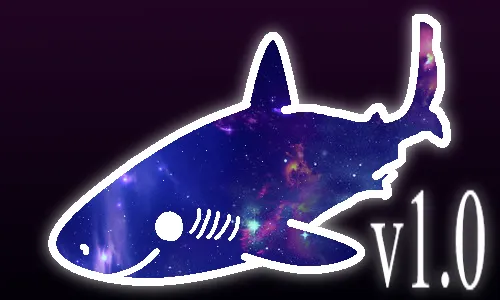
머리말
Shark Incremental은 MrRedShark77이 제작한 게임으로, 플레이어는 물고기를 잡아먹는 상어가 됩니다. 물고기를 이용하여 새로운 업그레이드를 잠금 해제하고 게임을 진행하세요.
현재 게임에는 10개의 레이어가 있습니다.
환생 (최초 출시)
핵심 (초기 버전, v0.1에서 기능 확장됨)
진화(버전 0.2에서 출시되었으며, 버전 0.2에서 내용이 확장되었습니다.)
특이점(버전 0.3에 포함됨)
하드론화(버전 0.4에 포함됨)
전능(버전 1.0에 포함됨)
초월(버전 1.0에 포함됨)
반응 (버전 1.0에 포함됨)
룬화(버전 1.0에 포함됨)
환생(버전 1.0에 포함됨)
0장 시작하기 전에
0장에서는 기본적인 게임 플레이, 사용자 인터페이스 및 설정에 대해 설명합니다. (이미 게임 방법을 알고 있다면 이 장을 건너뛸 수 있습니다.)
0장 1절 기본 플레이
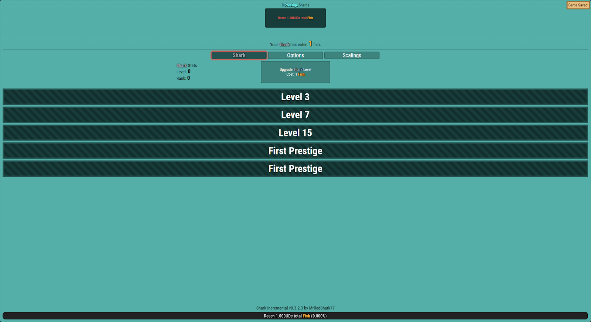
0 - 1 - 1: 시작
0 - 1 - 1은 게임 시작 시점을 보여줍니다.
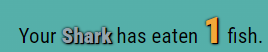
0 - 1 - 2: “물고기”
물고기는 게임의 첫 번째(이자 주요) 화폐이며, 다양한 업그레이드에 사용됩니다. 물고기를 더 많이 모으면 새로운 콘텐츠가 잠금 해제됩니다.
0 - 1 - 3: “탭”
0, 1, 3번 탭은 현재 보고 있는 탭(진한 파란색으로 표시됨)을 보여주고 다른 탭으로 이동할 수 있게 해줍니다. 각 탭은 고유한 기능을 가지고 있으므로 여러 번 탭을 전환해야 합니다. 처음에는 3개의 탭만 잠금 해제되어 있습니다.
샤크 - 기본 게임플레이
옵션 - 게임 설정
스케일링 - "스케일링"(레벨이 높을수록 비용 증가폭이 더 커짐)을 보여줍니다.
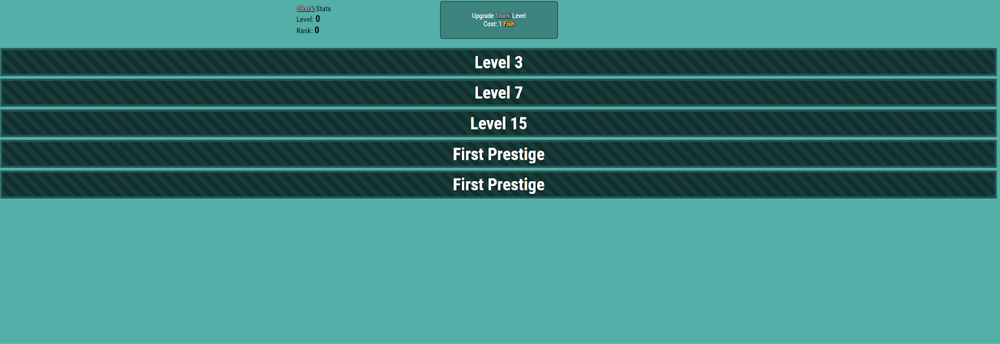
0 - 1 - 4: 메인 화면
탭 아래의 메인 화면에는 각 탭의 내용이 표시됩니다. 0 - 1 - 4는 첫 번째 게임 탭인 상어 탭의 내용입니다.
0 - 1 - 5: 게임 버전 및 게임 진행률 표시줄
화면 하단에는 게임 버전과 게임 진행률 표시줄이 있습니다. 게임 진행률 표시줄은 다음 게임 기능을 이용하기까지 얼마나 남았는지 보여줍니다.
0장 2절 게임 설정
게임을 시작하기 전에 편의성을 위한 몇 가지 설정을 하겠습니다.
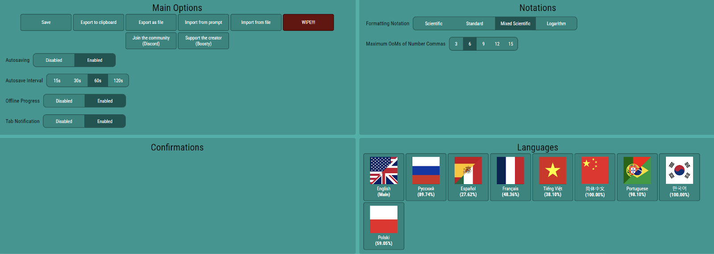
0 - 2 - 1: 옵션 탭
옵션 탭에는 4개의 섹션이 있습니다.
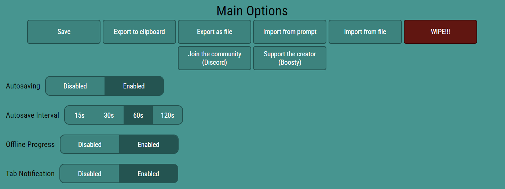
0 - 2 - 2: 주요 옵션
여기에는 저장 및 저장, 오프라인 진행 상황, 탭 알림에 대한 옵션이 있습니다.
저장 옵션:
저장: 게임 진행 상황을 저장합니다.
클립보드로 내보내기: 게임 진행 상황을 클립보드에 저장합니다(Ctrl + V를 눌러 붙여넣기). 진행 상황 손실을 방지하기 위해 주기적으로 저장하는 것이 좋습니다.
파일로 내보내기: 게임 저장 파일을 내보냅니다.
프롬프트에서 가져오기: 프롬프트에서 게임 저장 파일을 가져옵니다.
파일에서 가져오기: 파일에서 게임 저장 파일을 가져옵니다.
초기화!!!: 현재 진행 상황을 초기화합니다.
자동 저장 옵션:
자동 저장: 자동 저장 기능을 활성화/비활성화합니다.
자동 저장 간격: 자동 저장 간격을 설정합니다.
오프라인 진행 옵션:
오프라인 진행률: 오프라인 진행률 표시/해제.
탭 알림 옵션: (0 - 2 - 3 참조)
탭 알림: 탭 알림을 활성화/비활성화합니다.
기타:
커뮤니티에 참여하세요: 개발자 커뮤니티에 참여하세요디스코드 서버.
창작자를 응원하세요: 개발자를 응원하세요.
0 - 2 - 3: 탭 알림
탭 알림은 구매 가능한 업그레이드가 있는 탭을 빨간색으로 표시해주는 편의성 시스템입니다.
0 - 2 - 4: 표기법
표기법 설정도 있습니다.
표기법: 게임 내 표기법을 설정합니다. (과학적 표기법을 권장하며, 이 가이드에서도 이를 사용합니다.)
최대 000숫자 쉼표 개수: 과학적 표기법으로 전환되기 전 최대 숫자를 설정합니다.
0 - 2 - 5: 확인
그 안에는 아무것도 없습니다그는 확인했습니다처음에 탭이 있습니다. 진행하면서 추가될 것입니다.
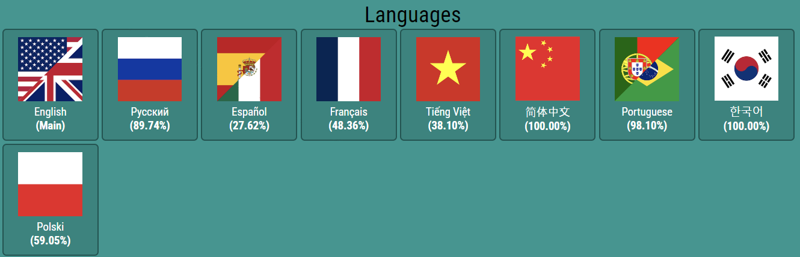
0 - 2 - 6: 언어
마지막으로 언어 설정이 있습니다. 여러 언어를 지원하지만, 영어와 러시아어를 제외한 나머지 언어는 플레이어들이 제작한 것이므로 오류가 있거나 불완전할 수 있습니다..
0장 3절 플레이 방식
샤크 인크리멘탈은 엄밀히 말하면 방치형 게임이지만, 능동적인 요소와 프레스티지 시스템이 많습니다. 대부분의 시간 동안 무언가를 하게 되며, 가만히 있는 시간은 주로 진행이 막혔을 때뿐입니다. 방치형 플레이 스타일을 선호한다면 다른 게임을 하는 것을 추천합니다. 그럼에도 불구하고, 이 게임에서는 몇 시간씩 걸리는 진행 불가 구간이 드물지 않다는 점을 유의하세요.
1장 시작
1장 1절 물고기
이 부분은 비교적 간단하므로 정보를 간략하게 정리하겠습니다.
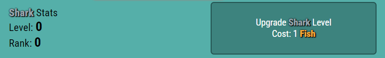
1 - 1 - 1: "상어 레벨" 업그레이드
상어 레벨은 첫 번째 업그레이드입니다. 물고기를 사용하여 업그레이드할 수 있습니다.
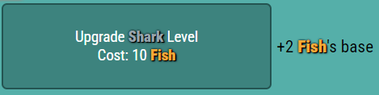
1 - 1 - 2: 상어 레벨의 효과
상어 레벨에는 여러 가지 효과가 있지만, 현재는 물고기만 만들어냅니다. 상어 레벨이 올라갈수록 새로운 효과가 잠금 해제됩니다. 물고기를 잡아 상어 레벨을 올리고, 레벨 3에서 첫 번째 업그레이드를 잠금 해제하세요.
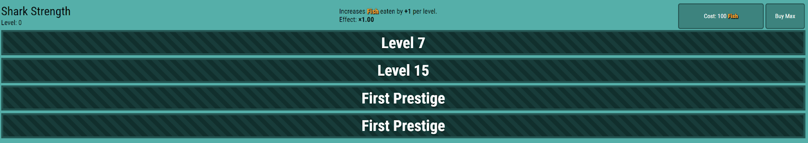
1 - 1 - 3: 첫 번째 "상어 업그레이드"
레벨 3에 도달하면 첫 번째 상어 업그레이드인 "상어의 힘"이 잠금 해제됩니다. 이 업그레이드는 레벨당 물고기 섭취량 배율을 +x1씩 증가시킵니다.
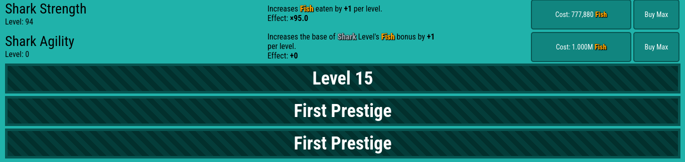
1 - 1 - 4: 두 번째 상어 업그레이드
두 번째 상어 업그레이드인 "상어 민첩성"은 레벨 7에서 잠금 해제되며, 상어 레벨의 기본 물고기 보너스를 레벨당 +1씩 증가시킵니다.
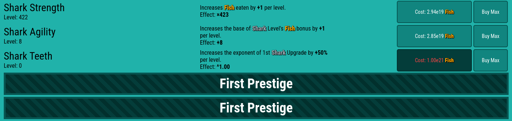
1 - 1 - 5: 세 번째 상어 업그레이드
레벨 15에 도달하면 세 번째 상어 업그레이드인 "상어 이빨"이 잠금 해제됩니다. 이 업그레이드는 첫 번째 상어 업그레이드의 지수를 50% 증가시킵니다. 상어 업그레이드를 계속 구매하고 상어 레벨을 올려 1.00e36마리의 물고기를 모으면 프레스티지 레벨이 잠금 해제됩니다.
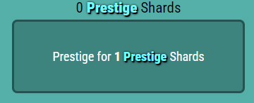
1 - 1 - 6: “프레스티지”
총 1e36마리의 물고기를 잡으면 명예를 얻을 수 있습니다.상어 레벨을 20까지 올리려면 물고기를 더 많이 잡아야 합니다. 레벨 20을 달성하면 "프레스티지 샤드"(PS) 보너스를 받을 수 있기 때문입니다. 첫 번째 프레스티지에서 5 PS를 얻는 것이 가장 좋지만, 2 PS만 얻어도 괜찮습니다. 5 PS를 얻으려면 잠시 동안 가만히 있어야 합니다.
1장 2절 환생
1 - 2 - 1: 프레스티지
프레스티지는 첫 번째 초기화 단계로, 상어 레벨, 상어 업그레이드, 그리고 PS를 소모하는 물고기를 모두 초기화합니다. 첫 번째 프레스티지를 통해 2 PS 이상을 획득할 수 있으며, 이 PS를 사용하여 새로운 업그레이드를 구매할 수 있습니다.
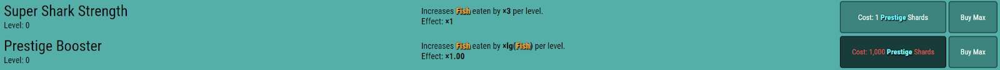
1 - 2 - 2: "프레스티지 업그레이드"
새로운 프레스티지 업그레이드 2가지, "슈퍼 상어 힘"과 "프레스티지 부스터"가 추가되었습니다. 슈퍼 상어 힘은 레벨당 먹는 물고기 수를 3배로 늘려줍니다. 프레스티지 부스터는 레벨당 먹는 물고기 수를 *log10(물고기)만큼 늘려줍니다. "최대 구매" 버튼을 사용하여 슈퍼 상어 힘 업그레이드를 2개(2PS) 또는 3개(5PS) 구매할 수 있습니다.프레스티지 업그레이드를 구매하신 후, 50 PS 이상에서 상어 레벨과 상어 업그레이드를 클릭하여 다음 프레스티지로 업그레이드하세요. 'p' 키를 눌러 프레스티지를 진행할 수도 있습니다.
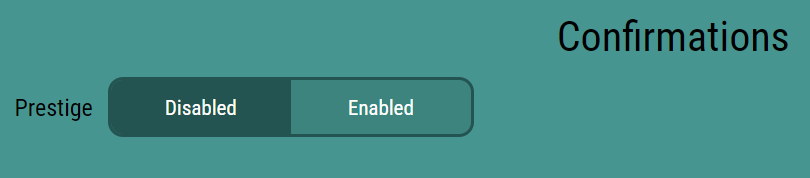
1 - 2 - 3: 환생 확인
또한, 옵션 탭에서 명예 확인 기능을 끄십시오.
슈퍼 샤크 강도 6개를 50PS에, 7개를 145PS에 구매하세요. (프레스티지 레벨당 1레벨씩 추가) 1000PS까지 구매 가능합니다. 슈퍼 샤크 강도 9개를 구매하지 말고 프레스티지 부스터를 구매하세요. 그러면 "자동화" 기능도 잠금 해제됩니다.
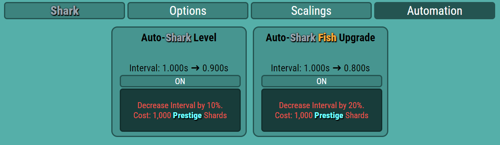
1 - 2 - 4: 자동화
자동화 탭에서 자동화 기능을 확인할 수 있습니다. 현재 "상어 레벨 자동 올리기"와 "상어 물고기 업그레이드 자동 구매하기" 두 가지가 있습니다. 상어 레벨 자동 올리기는 상어 레벨을 자동으로 올려주고, 상어 물고기 업그레이드 자동 구매하기는 물고기 업그레이드를 자동으로 구매해줍니다. PS(프레스티지 부스터)를 사용하면 자동화 간격을 단축(더 빠르게)할 수 있습니다. PS를 더 많이 얻으려면 프레스티지 부스터와 자동화 기능을 함께 사용하고, 업그레이드 순서를 다음과 같이 하세요: 프레스티지 부스터 > 슈퍼 상어 강화 > 자동화 > 프레스티지.
2~3e6 PS에서는 업그레이드를 미루고 8.88e6 PS에 프레스티지 부스터 4개를 구매하는 것이 좋습니다. e7 PS에서는 자동 상어 업그레이드 간격을 최대로 설정하세요. 이 과정을 다시 반복하여 (프레스티지 시 5~6e7 PS) 프레스티지 부스터 5개를 획득하세요. 그 후에는 프레스티지당 2e8 PS를 얻을 수 있으므로, 1e9 PS를 모아 다음 콘텐츠인 "연구"를 잠금 해제하세요.
1장 3절 연구
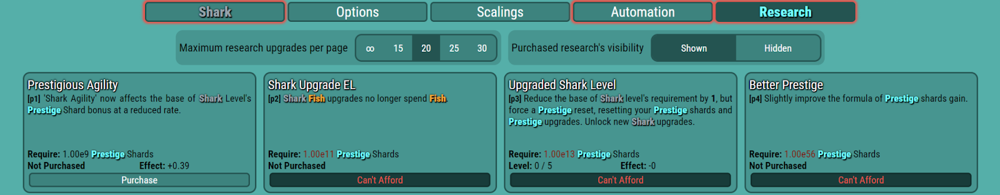
1 - 3 - 1: 연구
연구 ~이다다양한 화폐로 구매할 수 있는 일회성 업그레이드입니다.
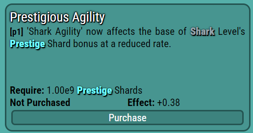
1 - 3 - 2: “명망 있는 민첩성”
연구원들은 이름과 ID를 가지고 있습니다.연구의 명칭과 효과, 그리고 요구 사항을 설명합니다. 이 가이드에서는 연구의 명칭과 효과를 설명합니다.
[p1] 명망 높은 민첩성 - 샤크 민첩성 지금 바로영향을 미치다샤크 레벨의 PS 보너스의 기본입니다.
[p1]은 더 많은 PS와 물고기를 제공합니다. 즉, 레벨 33에서 환생을 얻으면 3e10 PS를 얻습니다. 1장 - 2장 - 1장 순으로 동일한 과정을 반복하여 1e11 PS를 모아 [p2]를 구매하세요.
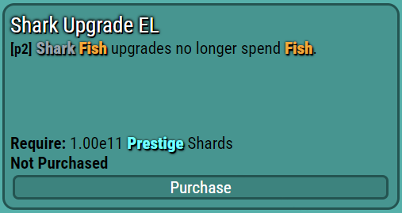
1 - 3 - 3: “샤크 업그레이드 EL”
[p2] 상어 업그레이드 EL - 상어 업그레이드는 더 이상 제공되지 않습니다경비 물고기.
레벨 35에서 프레스티지 시 8e11 PS를 얻을 수 있습니다(이때는 가만히 놔두세요). 프레스티지 업그레이드 30과 7에서는 프레스티지 시 1e12 PS를 얻을 수 있습니다. 1e13 이상의 PS와 [p3]을 얻기 위해 노가다하세요.
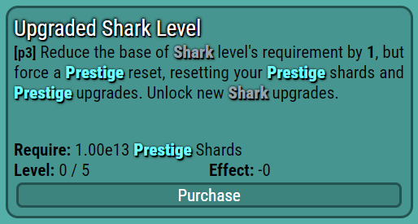
1 - 3 - 4: "업그레이드된 상어 레벨"
[p3] 상어 레벨 업그레이드 - 상어 레벨 요구 사항의 기본값을 레벨당 1씩 감소시키지만, 프레스티지 초기화로 인해 PS와 프레스티지 업그레이드가 초기화됩니다. 새로운 상어 업그레이드를 잠금 해제하세요.
[p3]을 구매하면 더 많은 물고기와 PS를 얻을 수 있지만, 대규모 초기화가 필요합니다. 따라서 [p3]을 구매한 후에는 (자동화를 이용해) 처음부터 다시 시작해야 합니다. [p3]과 같은 일부 연구는 레벨이 있으며, 레벨이 오를수록 효과는 커지지만 비용도 증가합니다. [p3]의 다음 레벨에는 1e15 PS가 필요합니다. 이전과 같은 방식으로 1e15 PS를 모은 후 [p3] 레벨 2를 구매하세요 ([p3]의 효과 덕분에 더 빠르게 진행할 수 있습니다).
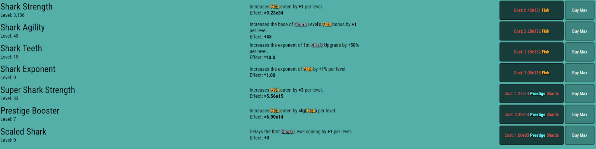
1 - 3 - 5: 새로운 상어 및 환생 업그레이드
[p3]에서는 새로운 상어 및 명예 업그레이드인 "상어 지수"와 "비늘 상어"가 잠금 해제됩니다. "상어 지수"는 상어 업그레이드로, 레벨당 물고기 지수를 +1%씩 증가시킵니다. "비늘 상어"는 명예 업그레이드로, 첫 번째 상어 레벨 스케일링이 레벨당 +1씩 지연됩니다.
위의 스케일링을 통해 상어 레벨 요구 조건이 이전보다 제곱으로 커졌습니다.
2 - 2 - 6: 스케일링
배율은 배율 탭에서 확인할 수 있습니다. 이는 밸런스 조정을 위해 업그레이드 구매 능력을 제한하는 역할을 합니다. 많은 기능에 배율이 적용됩니다. [p3]x2를 받으세요.이전과 같은 단계를 반복하여 5레벨까지 올리세요. 각각 1e15, 1e24, 1e30, 1e48 PS가 필요합니다. [p3]x4 레벨에 도달하면 비늘상어 업그레이드를 구매할 수 있습니다. 이 업그레이드를 가장 먼저 구매하세요. 85레벨까지 방치하고, 프레스티지 시마다 1e47+ PS를 모아 1e48 PS와 [p3]x5를 구매하세요. 이제 초반 진행 속도가 매우 빠릅니다. 다시 노가다를 하여 1e56 PS를 모아 [p4]를 구매하세요. 일반적으로 프레스티지하기 전에 몇 초 정도 기다려 상어 레벨을 하나 더 올릴 수 있는지 확인하세요.
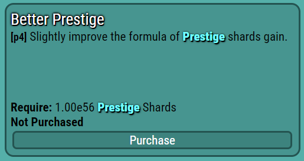
1 - 3 - 7: “더 나은 환생”
[p4] 더 나은 환생 - PS 획득 공식을 약간 개선합니다.
노가다를 하면 [p4]를 얻게 되는데, 이는 PS 획득량을 늘려줍니다. [p4]를 구매하면 e63 PS를 얻게 됩니다. 레벨 109와 e76 PS에서 정체될 것입니다. 2.30e78 PS를 모아 빠른 프레스티지를 통해 슈퍼 샤크 강도 158을 구매하세요. 그 후, 가만히 가만히 있으면 샤크 레벨 110과 "탐험" 잠금 해제가 됩니다.
1장 4절 탐험
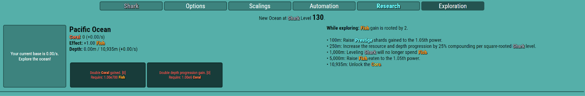
1 - 4 - 1: 탐험
탐험은 다른 방치형/증분형 게임의 도전 과제와 유사합니다. 탐험을 시작하면 몇 가지 제약 조건에 직면하게 됩니다.
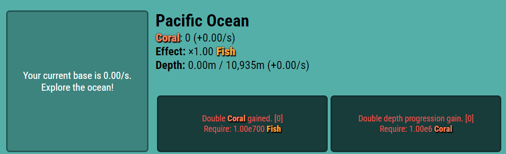
1 - 4 - 2: “태평양”
태평양은 여러분이 탐험할 수 있는 첫 번째 바다입니다. 왼쪽 버튼을 클릭하여 탐험을 시작할 수 있습니다.
1 - 4 - 3: 태평양 상황
버튼 오른쪽에 두 가지 항목이 있는데, 그중 하나가 "탐색 중"입니다. "탐색 중"에는 해당 해양을 탐색할 때 적용되는 해양 조건이 표시됩니다. 태평양에서는 어획량 증가가 2(^0.5)로 제곱됩니다. 버튼을 클릭하여 탐색을 시작하세요.
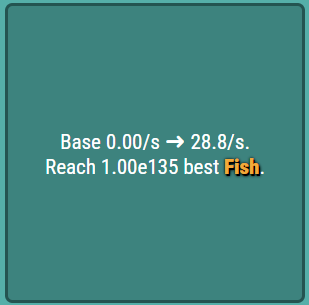
1 - 4 - 4: 바다 탐험…
바다를 탐험하는 동안, 여러분은 바다의 환경 속에서 잡은 가장 좋은 물고기를 기준으로 "기본" 점수를 얻게 됩니다. 태평양에서는 최소 1e135마리의 물고기가 필요합니다.태평양을 좀 경험해 보세요베이스처음에 가만히 있으면 물고기를 더 많이 잡아서 첫 시도에서 초당 10마리를 얻을 수 있습니다. 위 이미지는 탐색 전후의 기준치를 보여줍니다(탐험 전 0.00/초, 탐색 후 28.8/초). 탐색을 종료하려면 버튼을 다시 클릭하세요.
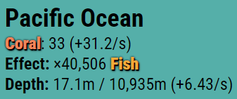
1 - 4 - 5: 해양 통계에 대한 설명
버튼 오른쪽에는 "해양 자원", "효과", 수심 등 더 자세한 정보가 표시됩니다. 해양 자원은 기지에서 얻을 수 있는 자원입니다.(태평양의 경우 "산호") 효과는 해양 자원의 효과를 나타냅니다(산호의 효과는 물고기 획득량을 증가시킵니다). 마지막으로, 수심은 기본 수치에 따라 증가하며, 수심 증가 속도는 기본 수치에 따라 감소합니다. 이를 통해 특정 목표를 달성할 수 있습니다.
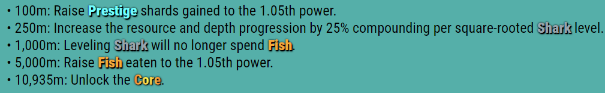
1 - 4 - 6: 심화 학습 단계
심도별 이정표는 특정 깊이에 도달하면 잠금 해제되는 이정표입니다.
100m 지점에서: PS 이득을 ^1.05만큼 높입니다.
250m 지점에서: 해양 자원과 수심 증가량을 1.25배로 늘립니다.
1000m 지점에서: 상어 레벨업 시 더 이상 물고기를 섭취하지 않습니다.
5000m 지점에서: 물고기 획득량을 ^1.05만큼 증가시키세요.
10925m 지점에서: 코어, 즉 다음 리셋 레이어를 잠금 해제하세요. (이것은 한동안 얻을 수 없을 겁니다.)
몇 초에서 1분 안에 첫 번째 목표를 달성하게 되며, 이를 통해 환생 점수 약 84 PS를 얻을 수 있습니다. 비늘상어 4마리를 더 구입하고 다시 탐험을 떠나세요. 더 많은 기본 점수를 얻으려면 바다에서 가장 강한 물고기를 잡아야 합니다.
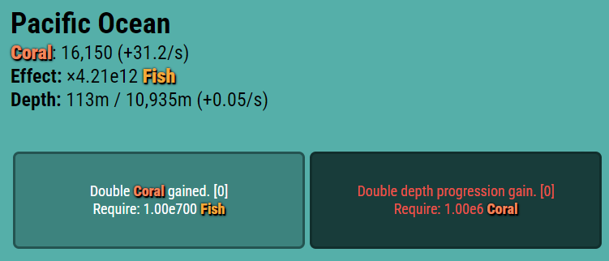
1 - 4 - 7: “해양 업그레이드”
각 해양에는 두 가지 유형의 업그레이드가 있습니다. 하나는 다른 화폐를 사용하여 해양 자원 획득량을 2배로 늘리는 것이고, 다른 하나는 해양 자원을 사용하여 수심을 2배로 늘리는 것입니다.
산호 획득량 2배 증가 혜택을 받으면 기본 자원 약 1000을 얻을 수 있습니다. 이는 산호, 물고기, PS가 더 많이 생긴다는 것을 의미합니다. PS 96까지 파밍하고 다시 탐험하여 기본 자원 5000/초를 달성하면 두 번째 마일스톤에 도달합니다. 두 번째 마일스톤에서는 더 깊은 수심과 해양 자원을 얻을 수 있어 물고기가 더 많이 생깁니다. 잠시 방치하여 레벨 123을 달성하고 프레스티지를 통해 PS 약 97을 얻으세요. [p5]를 구매하기 위해 조금 더 파밍하세요.
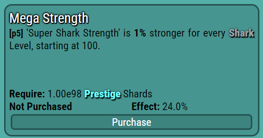
1 - 4 - 8: “메가 스트렝스”
[p5] 메가 스트렝스 - "슈퍼 상어의 힘"은 상어 레벨이 오를 때마다 1%씩 강해집니다. (레벨 100부터 시작)
[p5]는 환생 업그레이드를 높여주기 때문에 더 많은 물고기를 제공합니다. 환생 부스터 42개를 획득하고 다시 탐험하면 레벨 130에서 초당 11000 이상의 기본 점수를 얻을 수 있습니다.잠금 해제다음 바다.
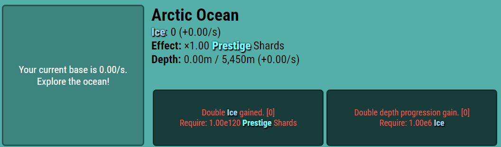
1-4-9: “북극해”
북극해는 두 번째 대양입니다. 북극해는 "얼음"을 자원으로 가지고 있으며, PS(플레이어 능력치)를 올려줍니다.
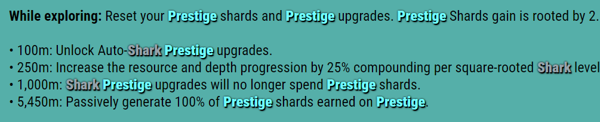
1 - 4 - 10: 북극해의 현황 및 주요 사건
다음은 북극해의 환경 조건과 주요 사건들입니다.
조건 - PS와 프레스티지 업그레이드를 초기화하면 PS 획득량은 제곱근에 비례합니다.
100m 거리에서 "자동 상어 명예 업그레이드"를 잠금 해제하세요.
250m 지점에서 해양 자원과 수심 증가율을 1.25배로 높입니다..
1000m에 도달하면 환생 업그레이드에 더 이상 PS가 소모되지 않습니다.
5450m 거리에서 - 초당 환생으로 획득하는 PS의 100%를 자동으로 획득합니다.
해당 조건은 환생 진행 상황을 초기화하며, 이는 당신이 다음과 같은 상황에 처하게 된다는 것을 의미합니다.환생이 필요하다북극해에서 시작하세요. 먼저 환생 레벨을 올리고, 1450 물고기로 환생 업그레이드를 구매하여 기본 레벨을 올리세요. 최소 초당 200마리가 필요하지만, 250~300마리 정도면 충분할 겁니다. 그 후 수심 100m까지 내려가면 자동 상어 환생 업그레이드 기능이 해금됩니다. 이 기능을 켜두는 것을 잊지 마세요.
이제 e1000 이상의 물고기와 e121 이상의 PS를 얻을 수 있습니다. 두 바다를 각각 21000+ 및 6000+ 기본 레벨로 업그레이드하기 위해 열심히 노력하세요. 그러면 각각 세 번째와 두 번째 마일스톤을 달성하고 e140 이상의 PS를 얻을 수 있을 겁니다. 이제부터는 탐험 > 프레스티지 몇 번 > 바다 업그레이드 구매 순으로 진행하세요.
e150~e155 PS 구간에 시간 장벽이 있습니다. e153 PS에서 두 기지 모두 +47000/s를 달성한 다음, 가만히 두어 레벨 145에 도달하고 프레스티지를 통해 2e154 PS를 획득하세요. [p6]을 위해 1e155 PS를 모으세요.
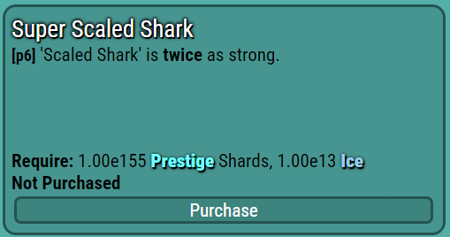
1 - 4 - 11: "초대형 비늘상어"
[p6] 슈퍼 비늘상어 - 비늘상어는 두 배 더 강합니다.
[p6]을 구매한 후 프레스티지에서 e170 PS를 얻게 됩니다. 사이클을 다시 반복하고 푸시하세요.이200추신, 그리고 다음 바다를 잠금 해제하려면 레벨 175까지 가만히 서 계세요.
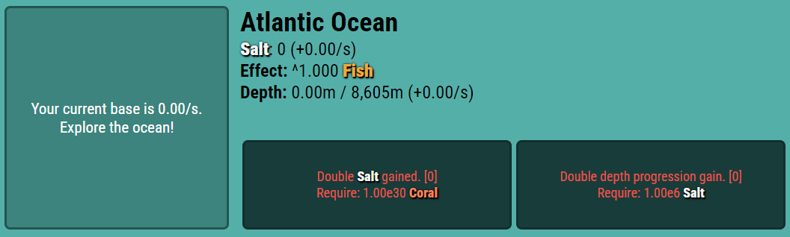
1 - 4 - 12: “대서양”
대서양은 소금을 자원으로 가진 세 번째 대양이며, 풍부한 어족 자원을 제공하는 곳입니다.
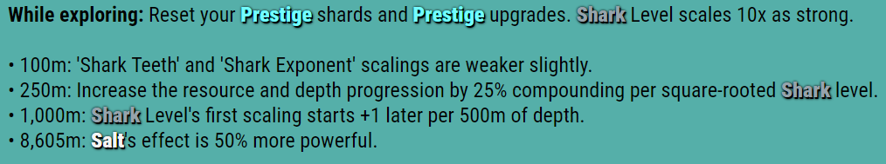
1-4-13: 대서양의 현황 및 주요 사건
다음은 대서양의 현황 및 주요 사건들입니다.
조건 - PS와 프레스티지 업그레이드가 초기화되고, 상어 레벨이 10배 더 강해집니다.
100m 거리에서는 상어 이빨과 상어 비늘의 무늬가 약간 약해집니다.
250m 지점에서: 해양 자원과 수심 증가량을 1.25배로 늘립니다..
1000m 수심에서: 상어의 레벨 변화는 수심 500m마다 1씩 늦어집니다.
8605m 고도에서 소금의 효과는 50% 더 강력해집니다.
첫 탐험에서는 초당 2000 이상의 기지를 확보하는 것을 목표로 하세요. 북극해와 마찬가지로,환생이 필요하다PS를 다시 밀어서 대서양의 첫 번째 마일스톤을 달성한 다음 기본 6000+/s를 달성하세요. 두 번째 마일스톤을 위해 가만히 있다가 e265 PS와 [p7]을 위해 밀어붙이고 노가다하세요.
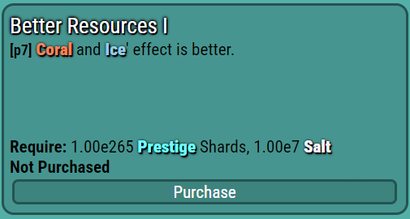
1-4-14: “더 나은 리소스 I”
[p7] 더 나은 자원 I - 산호와 얼음의 효과가 더 좋습니다.
[p7]을 구매하면 더 많은 물고기와 PS를 얻을 수 있습니다. 대서양에서 e295 PS와 초당 45,000 이상의 기본 생산량을 목표로 하세요. 대서양에서 e300 PS와 초당 50,000 이상의 기본 생산량을 달성한 후, 북극해 네 번째 마일스톤과 대서양 세 번째 마일스톤을 완료할 때까지 가만히 두세요. 그러면 PS가 자동으로 획득되어 다음 해양이 잠금 해제됩니다.
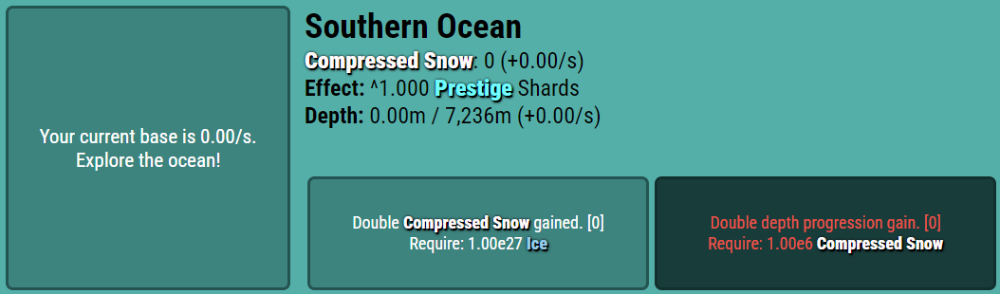
1-4-15: “남극해”
남극해는 해당 챕터에서 마지막으로 해금되는 바다입니다. 남극해의 자원은 "압축된 눈"이며, 이는 PS 보너스를 기하급수적으로 증가시킵니다.
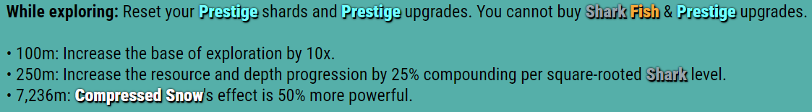
1-4-16: 남극해의 상황 및 중요한 사건
다음은 남극해의 환경 조건 및 주요 사건들입니다.
조건: PS와 프레스티지 업그레이드를 초기화해야 하며, 상어 업그레이드나 프레스티지 업그레이드를 구매할 수 없습니다.
100m 지점에서: 탐사 가능 범위를 10배로 늘립니다.
250m 지점에서: 해양 자원과 수심 증가량을 1.25배로 늘립니다..
해발 7236m에서는 압축된 눈의 효과가 50% 더 강력해집니다.
첫 번째 마일스톤은 매우 강력하므로 빠르게 획득하는 것이 좋습니다. 기본 속도 1/s부터 시작하여 사이클을 반복하여 속도를 높이세요. 기본 속도가 50/s 이상이 되면 100m 동안 가만히 두어 마일스톤을 획득하세요. 이를 통해 태평양의 마지막 마일스톤에 쉽게 도달하고 다음 초기화 레이어인 "코어"를 잠금 해제할 수 있습니다. [e1]도 구매할 수 있습니다.
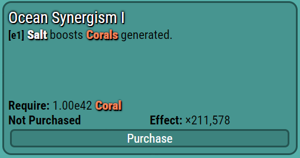
1 - 4 - 17: “해양 시너지 효과 I”
[e1] 해양 시너지 효과 I - 소금은 산호 생성을 촉진합니다.
[e1]을 구매하면 산호를 더 많이 얻을 수 있습니다. 사이클을 완료하고 [e2]를 구매하면 더 많은 진전을 이룰 수 있습니다.
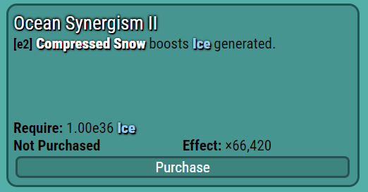
1-4-18: “해양 시너지 II”
[e2] 해양 시너지 II - 압축된 눈은 얼음 생성을 촉진합니다.
다음 레이어에는 e450 PS가 필요하므로 [e2]가 필요합니다. 다음 레이어의 경우 재설정 시 최소 2개 또는 4개의 "마그마 조각"(MF)을 기다리는 것이 좋습니다(4개가 권장되지만 유휴 시간이 필요합니다). 이를 위해서는 e460 PS(유휴 상태인 경우 e480 PS)가 필요합니다.
2장 코어
2장 1절 코어 원자로
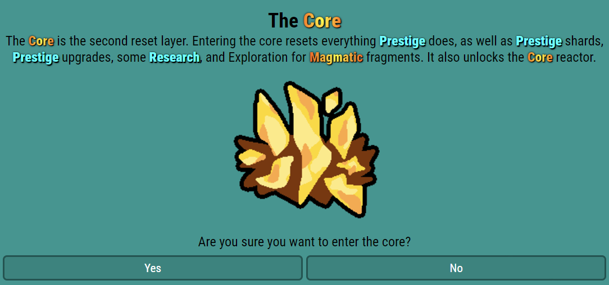
2 - 1 - 1: 핵심
코어는 두 번째 초기화 단계입니다. 코어에 진입하면 프레스티지 관련 모든 항목, PS, 프레스티지 업그레이드, 일부 연구 및 탐험이 초기화됩니다. 첫 번째 코어 초기화에서 2(가능하면 4) MF를 획득했을 것이며, 이를 새로운 업그레이드에 사용할 수 있습니다.
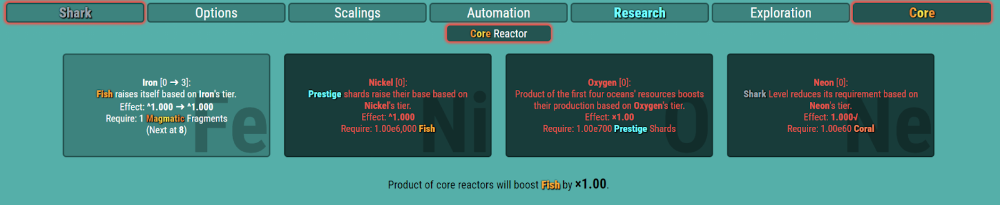
2 - 1 - 2: “핵심 원자로”
핵심 원자로는 여러 차례 업그레이드를 거친 핵 시설의 첫 번째 주요 특징입니다.
철 - 물고기는 철의 등급에 따라 스스로 성장합니다.
니켈 - PS 기본 가격은 니켈 등급에 따라 상승합니다.
산소 - 처음 네 대양의 생성물은 산소를 기반으로 스스로를 강화합니다.
네온 - 샤크 레벨 요구 사항은 네온의 티어에 따라 감소합니다.
철 티어 2 또는 3(MF 2 또는 4)을 구매하세요. 코어 리액터를 구매하는 데에는 게임 화폐가 필요하지 않지만, 필요합니다. 더 많은 MF를 얻으려면 이 장 앞의 단계를 반복하세요.
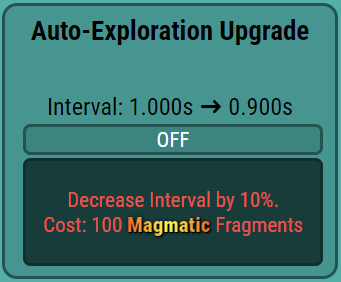
2 - 1 - 3: "자동 탐색 업그레이드"
코어에 처음 진입하면 자동 탐험 업그레이드가 잠금 해제됩니다. 이 업그레이드를 활성화하면 해양 업그레이드가 자동으로 구매됩니다. 다음 리셋 시에는 네온 1단계 업그레이드를 완료하고, 이어서 매직 파인드 7개를 구매하세요. 그런 다음 철을 구매하여 5단계 업그레이드를 완료하십시오. 철 등급 업그레이드는 비용이 들지 않으므로 다른 업그레이드보다 먼저 구매하세요. MF.[c1]을 구매하세요.
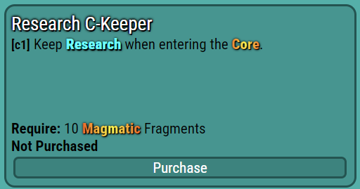
2 - 1 - 4: “C-Keeper 연구”
[c1] 연구 C-Keeper - 핵심부에 진입할 때 연구를 유지합니다.
[c1]을 사용하면 초반 게임 진행 속도가 훨씬 빨라집니다. 더 많은 물고기와 산호를 모아 핵심 원자로를 더 많이 구매하세요. 핵심 원자로 6/3/0/3 티어를 달성하세요.MF 100과 [c2]x1을 목표로 파밍하세요. MF를 모으는 방법은 다음과 같습니다. 북극해까지 프레스티지를 하고 업그레이드를 구매한 후, 첫 번째 북극해, 첫 번째 남극해, 네 번째 북극해 마일스톤(이 순서대로)을 달성하세요. 모든 해양을 탐험하고 MF를 최대한 높이세요. [e2]는 7/5/3/4로 맞추되, MF를 극대화하기 위해 미리 8단계 철 장비를 구매하여 MF 128을 확보하세요.
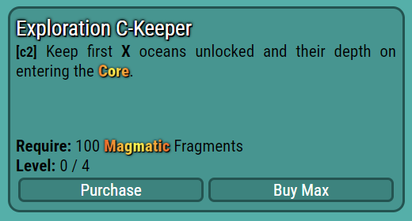
2 - 1 - 5: “탐험 C-키퍼”
[c2] 탐사 C-키퍼 - 코어 재설정 시 첫 번째 X 해양 잠금 해제 및 깊이를 유지합니다.
[c2]x1을 구매하면 태평양 진행 상황과 주요 업적을 유지할 수 있습니다. [c2]x2를 얻으려면 MF 800이 필요하므로 상당한 노가다가 필요하지만, 다시 프레스티지를 할 필요는 없습니다. 10/7/5/5 업적을 달성한 후에 도전하세요. [c2]x3을 얻으려면 MF 2700이 필요하므로, 먼저 MF 1000으로 [c3]을 구매하세요. 각 해양을 한 번씩 탐험하고 MF 100이 되면 초기화하는 방식으로 MF를 모을 수 있습니다. 다음 철 등급을 위해 MF 1025를 모으는 것도 잊지 마세요.
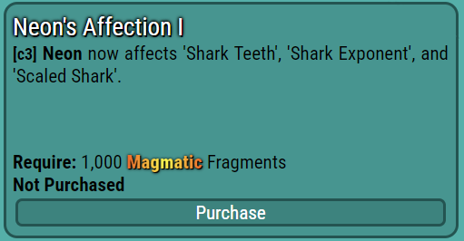
2 - 1 - 6: “네온의 애정 I”
[c3] 네온의 애정 I - 네온은 이제 '상어 이빨', '상어 지수', '비늘 상어'에 영향을 미칩니다.
[c3]을 구매하면 더 많은 물고기를 얻을 수 있습니다. 이제 리셋할 때마다 350 이상의 MF를 얻을 수 있습니다. [c2]x3으로 2700 MF를 얻고 12/8/5/6을 얻으세요. 리셋할 때마다 400 MF를 얻고 6400 MF로 13/8/5/7까지 도달하세요. 다음으로 1e2000 PS와 [c4]를 구매하세요.
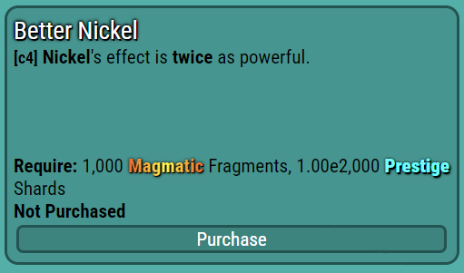
2 - 1 - 7: “베터 니켈”
[c4] 더 나은 니켈 - 니켈의 효과는 두 배 더 강력합니다.
[c4]를 구매하면 리셋할 때마다 700 이상의 MF를 얻을 수 있습니다. 다음 기능을 위해 10,000 MF까지 모으세요.
2장 2절 코어 방사선
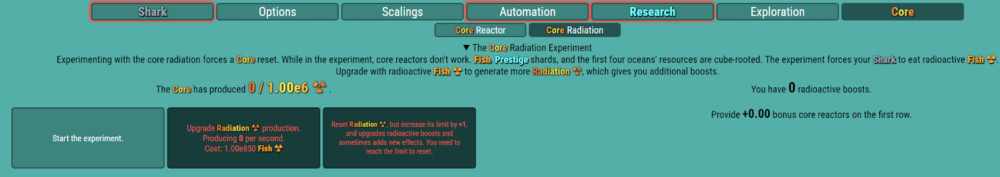
2-2-1: “핵심 방사선”
핵 방사능은 10,000 MF에서 해제됩니다. 탐험과 유사한 방식으로 진행됩니다. "실험"을 시작하면 핵 원자로가 초기화됩니다. 실험 중에는 핵 원자로가 작동하지 않으며, 물고기, PS, 그리고 처음 네 개의 해양 자원은 세제곱근만큼 증가합니다. 실험 중에 "방사능 물고기 ☢"를 획득할 수 있으며, 이를 이용해 "방사능 생산 업그레이드"를 구매할 수 있습니다. 방사능 생산 업그레이드는 방사능을 생산합니다. 방사능 수치와 현재 "방사능 부스트" 레벨에 따라 부스트가 적용됩니다. 방사능 부스트 레벨은 방사능 상한선에 도달하여 현재 방사능 수치를 초기화하면 구매할 수 있습니다. 방사능 부스트는 기존 효과를 강화하거나 새로운 효과를 추가합니다. 실험을 시작하기 전에 [e3]x1을 구매하여 부스트를 더 확보하세요.
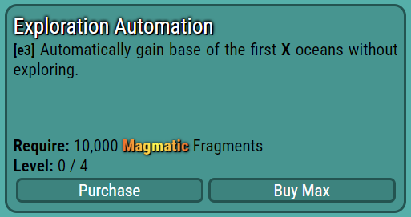
2 - 2 - 2: “탐색 자동화”
[e3] 탐사 자동화 - X개 해양의 첫 번째 기지를 해양 외부에서 획득합니다.
[e3]x1을 사용하면 다음과 같습니다.태평양을 얻으세요오션 베이스는 수동적인 방식이라 더 이상 탐험할 필요가 없습니다. 이제 실험을 시작하여 방사능을 획득하세요.
1e850마리의 물고기가 방사능을 생산하기 시작하려면 시간이 좀 걸릴 수 있습니다. 나머지 세 개의 바다를 탐험하여 자원을 확보하고 1e850마리의 물고기를 얻으세요. 현재로서는 방사능 생산 업그레이드를 하나 더 구매할 수 없으므로 실험을 중단하세요. 방사능 300이면 한 번의 리셋으로 1500 이상의 MF를 얻을 수 있습니다.
이제 자동 탐사 자동 구매기를 업그레이드하세요. 방사능 400과 13/10/7/6에서 방사능 생산 업그레이드를 하나 더 구매하세요. 방사능 1100에서 또 하나를 구매하세요.e1033물고기. 핵심 원자로를 13/10/7/7로 설정하고 대기시켜 방사능을 더 많이 얻으세요.업그레이드를 통해 1024의 방사능을 얻을 수 있습니다.초당 약284000 방사선이제 1e6의 방사능 수치가 쌓일 때까지 기다려 첫 번째 방사능 부스트를 얻으세요. 기다리는 동안 철 등급에 필요한 MF를 모으세요.
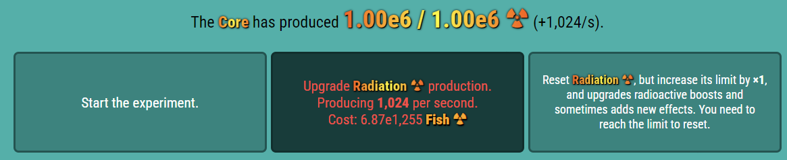
2 - 2 - 3: 방사능 부스트
방사능 수치가 1e6에 도달하면 방사능 부스트를 얻어 방사능 상한선을 높이고 더 많은 MF를 획득할 수 있습니다. 실험에 다시 참여하여 방사능 생산 업그레이드를 구매하세요. 그러면 한 번의 리셋으로 20,000 이상의 MF를 얻을 수 있습니다. 코어 리셋 단축키 'c'를 사용하여 [e3]x3으로 빠르게 리셋하세요. 더 많은 MF와 방사능 업그레이드를 얻으려면 대서양과 남극해를 탐험하세요. 1.25e6 MF로 [e3]x4를 획득하면 진행 상황과 편의성이 향상됩니다. 방사능 업그레이드를 구매하고 MF를 꾸준히 모으세요. 몇 초마다 90,000 이상의 MF를 얻을 수 있으며, 코어 원자로 17/14/9/7에서는 1e5 MF를 얻을 수 있습니다.방사능 업그레이드를 다시 획득하고 방사능 상한선과 추가 방사능 부스트를 위해 MF를 모으세요. 이제 리셋할 때마다 5e5 이상의 MF를 얻을 수 있으며, 곧 코어 원자로 19/16/11/8에서 9e5 이상의 MF를 얻을 수 있게 됩니다. 이후에는 상당한 시간적 장벽이 있습니다. [c5]를 얻으려면 1e9 MF를 모아야 합니다. 이 과정에서 [p8]에 필요한 14000 PS를 모을 수 있습니다.
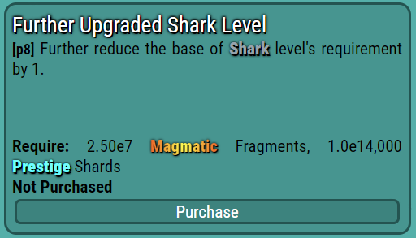
2 - 2 - 4: "더욱 업그레이드된 상어 레벨"
[p8] 상어 레벨 추가 업그레이드 - 상어 레벨 요구 사항의 기본값을 1만큼 감소시킵니다.
[p8]을 구매하시면 초기화 시 2e6+ MF를 획득하실 수 있습니다. 또한 새로운 상어 업그레이드를 위해 레벨 640에 도달하게 됩니다.
2 - 2 - 5: "방사능 상어"
방사능 상어는 레벨당 방사능 생산량을 2배로 증가시킵니다. 철 등급을 얻기 위해 1.09e9 MF를 계속 노가다한 다음 [c5]를 구입하세요.
2 - 2 - 6: “추가 코어 부스트”
[c5] 추가 코어 부스트 - 코어 방사능 보너스 원자로가 이제 코어 원자로의 어류 부스트에 감소된 비율로 영향을 미칩니다.
[c5] 이후에는 리셋 시 1.7e7+ MF를 얻을 수 있습니다. 방사능 제한에 대한 유휴 상태입니다.방사능 부스트를 얻으세요. 이제 리셋 시 2e8 이상의 MF를 획득할 수 있습니다. 방사능 업그레이드는 2e21 방사능과 코어 원자로 22/22/15/9, 1e22 방사능과 코어 원자로 22/22/16/9, 그리고 3e22 방사능과 코어 원자로 22/23/16/9에서 추가로 진행할 수 있습니다. 이제 가만히 두어 방사능 상한선에 다시 도달하세요. 그러면 리셋 시 1e10 이상의 MF를 획득할 수 있습니다. 코어 원자로 23/25/18/10에 도달하고 자동 탐사 자동화를 최대 레벨로 만드세요. 가만히 두어 방사능 상한선에 두 번 더 도달하세요. 이제 상어 레벨 1000에서 새로운 바다를 해금할 시간입니다.
2 - 2 - 7: “인도양”
인도양은 다시마를 자원으로 보유한 다섯 번째 대양으로, 방사능 수치를 높이는 데 기여합니다.
2 - 2 - 8: 인도양의 현황 및 주요 사건
다음은 인도양의 주요 조건과 핵심 사항입니다.
조건: 당신은 처음 4개의 대양에 갇혔고, 당신의 물고기 지수는^0.75만큼 증가합니다.
100m 거리에서: 방사선량 상한선을 1,000분의 1로 줄입니다.
250m 지점에서: 해양 자원과 수심 증가량을 1.25배로 늘립니다..
5000m 고도에서: 핵심 원자로는 나중에 +5만큼 커집니다.
7290m 고도에서: 다시마의 효과를 향상시키세요.
아직 기본 자원 자동 획득 기능이 없으므로 인도양을 직접 탐험해야 합니다. 초당 100 이상의 기본 자원을 확보하세요. 첫 번째 목표 달성까지 가만히 있으면 방사능 부스트가 더 많이 발생하고 초당 900~2000의 기본 자원을 얻을 수 있습니다. 두 번째 목표 달성까지 가만히 있으면 수심 증가와 방사능 부스트가 더 많이 발생합니다. 방사능 부스트 9개를 모으면 두 번째 상어 레벨 스케일링을 지연시키는 새로운 효과가 추가됩니다. 초당 5000 이상의 기본 자원을 확보하면 [e4]를 구매하세요.
2-2-9: “다시마 산화”
[e4] 다시마 산화 - 산소는 이제 다시마 생산에 영향을 미치는 비율이 감소합니다.
[e4]는 방사능 생산량을 크게 증가시켜 방사능 부스트를 제공하고 기본 방사능량을 초당 17000 이상으로 늘립니다. 유휴 상태일 때는 기본 방사능량이 초당 23000 이상이고 방사능량은 2.23e56입니다.그런 다음 35/61/44/13을 얻으세요. 방사능 부스트를 얻고 e21 MF를 위해 코어 리셋을 수행하여 [c6]을 구매하세요.
2 - 2 - 10: “방사선 감소”
[c6] 방사선 감소 - MF줄이다방사선량 상한선이 감소된 속도로 낮아집니다.
[c6]은 MF 양에 비례하여 방사능 상한선을 감소시켜 더 많은 방사능 부스트를 얻을 수 있게 해줍니다. 방사능 부스트를 하나 더 획득하고 인도양을 탐험하여 마지막 마일스톤을 달성하세요. 그 후, 다음 방사능 부스트를 위해 가만히 기다리세요. 13번째 방사능 부스트를 획득하면 MF 획득량을 증가시키는 새로운 효과를 얻게 되어 리셋당 5e33+ MF를 얻을 수 있습니다. [c7]을 위해 1e36 MF를 모으세요.
2 - 2 - 11: "더 큰 상어 이빨"
[c7] 더 큰 상어 이빨 - 상어 이빨의 효과가 ^2.5만큼 증가합니다.
[c7]은 낚시에 부스트를 제공합니다. 실험에 참여하여 방사능 부스트 2개와 더 많은 MF를 획득하세요. 이제 리셋할 때마다 4e57+ MF를 얻을 수 있습니다. 노가다를 통해 [c8]을 구매하세요.
2 - 2 - 12: “더 나은 철 & 네온”
[c8] 향상된 철 & 네온 - 철의 효과가 두 배로 강력해졌으며, 철 & 네온의 효과도 향상되었습니다.
요구 사항이 크게 줄어듭니다.
[c8]은 철의 효과를 두 배로 늘리고 철과 네온의 요구량을 대폭 줄여주므로 두 재료 모두 많은 티어를 구매할 수 있습니다. 이제 1e72 MF를 모으세요. 초기화할 때마다 e70+ MF를 모으면 코어 리액터와 방사능 부스트를 얻을 수 있습니다. 1e72 MF에 도달하면 다음 기능인 "코어 조립기"가 잠금 해제됩니다.
2장 3절 코어 조립기
2 - 3 - 1: 코어 조립기
여기는 핵심 조립기 탭입니다. MF를 사용하면 "최대 건물 수"를 늘릴 수 있고, "핵심 건물"을 추가할 수도 있습니다.
2 - 3 - 2: 핵심 건물 목록
핵심 건물에는 몇 가지 능력치가 있습니다. 바로 강도, 배치 가능 개수, 기본 수치, 그리고 온도입니다. 배치 가능 개수는 해당 유형의 건물을 얼마나 배치했는지, 그리고 얼마나 배치할 수 있는지를 보여줍니다. 온도는 방사능 수치를 높여주며, 기본 수치에 강도를 곱한 값입니다.
핵심 건물에는 MF에서 얻는 철(Fe), 물고기에서 얻는 니켈(Ni), PS에서 얻는 산소(O), 상어 레벨에서 얻는 네온(Ne)의 4가지 유형이 있습니다.
온도가 방사능 부스트를 증가시키므로, 건물 배치를 통해 최대한 높은 온도를 유지하도록 노력하세요 (이 가이드에서는 최적의 배치를 보여주지만, 직접 실험해 보는 것도 좋습니다). 핵심 건물은 격자를 클릭하여 배치할 수 있습니다. 핵심 건물을 삭제하려면 "지우기 모드"를 사용하세요.
2 - 3 - 3: 첫 번째 코어 건물
첫 번째 핵심 건물에는 Ni를 배치하세요. 변경 사항은 다음 핵심 재설정 시점까지 적용되지 않습니다. 온도가 내려가면 오른쪽 텍스트가 빨간색으로, 올라가면 초록색으로 표시됩니다. 이제 두 번째 건물에 필요한 1e76 MF를 모으기 위해 파밍하세요.
2 - 3 - 4: 2개의 핵심 건물
두 번째 핵심 건물을 지을 때는 철(Fe)을 니켈(Ni) 옆에 배치하세요. 이렇게 하면 강도가 증가합니다. 강도는 건물 온도를 1배로 높여줍니다. 각 핵심 건물은 100%의 강도 증가 효과를 가지며, 옆에 다른 핵심 건물을 배치하면 50%가 추가됩니다. 따라서 두 건물의 강도는 150%까지 증가합니다(온도는 1.5배 증가). 하나의 핵심 건물이 가질 수 있는 최대 강도는 300%입니다.코어 온도를 새로 고치려면 코어 리셋을 잊지 마세요. 이제 1e84 MF와 [p9]를 위해 파밍하세요.
2 - 3 - 5: “더 나은 코어 부스트”
[c9] 더 나은 코어 부스트 - 코어 원자로의 물고기 부스트 기능을 향상시킵니다.
[c9]는 어획량을 증가시키고 방사능 부스트를 한 번 더 얻어 MF를 e99까지 끌어올릴 수 있게 해줍니다. 다음으로, MF를 1e101까지 모아서 세 번째 핵심 건물을 획득하세요.
2 - 3 - 6: 3개의 핵심 건물
세 번째 핵심 건물에서는 온도를 높이기 위해 O를 Fe 옆에 배치하세요. 이제 e109 MF를 모아서 네 번째 핵심 건물을 구입하세요.
2 - 3 - 7: 4개의 핵심 건물
네 번째 핵심 건물을 잠금 해제하면 각 종류의 핵심 건물을 두 개씩 배치할 수 있습니다. Ni 2개와 Fe 2개를 배치하세요. 방사능 부스트를 하나 더 획득한 다음 MF를 1e133까지 모아서 [c10]을 구매하세요.
2 - 3 - 8: "초대형 비늘상어"
[c10] 초거대 비늘상어 - 비늘상어는 이제 두 번째 상어 레벨 스케일링을 지연시킵니다.
할인된 요금.
[c10]을 구매하면 리셋할 때마다 1e140 MF를 얻을 수 있습니다. 코어 리액터를 더 많이 확보하고, 방치하면 두 번째 코어 리액터 줄이 잠금 해제됩니다.
2-3-9: 핵심 원자로의 두 번째 줄
두 번째 열의 핵심 원자로는 화폐 대신 첫 번째 열의 핵심 원자로를 필요로 합니다.
"유황": 물고기는 유황의 등급에 따라 철을 강화합니다. (철 필요)
"실리콘": PS는 실리콘의 등급에 따라 니켈의 가치를 강화합니다. (니켈 필요)
"질소": 다시마는 질소의 등급에 따라 산소를 강화합니다. (산소 필요)
"헬륨": 상어 레벨은 헬륨의 등급에 따라 네온을 강화합니다. (네온 필요)
가능한 한 많이 구매하세요. 다음 목표는 총 1.5e18마리의 물고기를 모아 다음 초기화 단계를 잠금 해제하는 것입니다. 3/2/2/1을 획득하세요.그런 다음 방사능 부스트를 하나 더 획득하세요. 인도양에서 초당 1e18+를 얻은 다음 MF를 채굴하고 1e78 켈프를 모아 [e5]를 구매하세요.
2 - 3 - 10: “탐색 자동화 MK2”
[e5] 탐사 자동화 MK2 - 인도양에서 자동으로 기지 확보
다시마의 효능을 다시 한번 개선해 보세요.
[e5]를 구매하면 방사능 수치를 크게 높여 추가적인 방사능 부스트를 얻을 수 있습니다. 1e196 MF를 모아서 다섯 번째 핵심 건물을 잠금 해제하세요.
2 - 3 - 11: 5개 핵심 건물
다섯 번째 핵심 건물에는 철 옆에 산소를 배치하세요. 그러면 e210 MF와 e283 방사선량을 얻을 수 있습니다.5/4/3/3을 얻은 다음 e213 MF까지 갈아서 [c11]을 구매하세요.
2-3-12: “더 나은 방사선 감소”
[c11] 방사선 감소 효과가 더 좋습니다 - [c6]이 약간 더 강합니다.
[c11]을 통해 방사능 부스트를 하나 더 얻을 수 있습니다. e225 MF까지 노가다한 다음, e1.5e18 물고기를 모아 다음 단계인 "진화"를 잠금 해제하세요. 첫 번째 초기화 시 휴머노이드 상어(HS) 1마리를 획득합니다.
2 - 3 - 13: 상어를 "인간형 상어"(HS)로 진화시키세요
3장 진화
3장 1절 진화 트리와 목표
3 - 1 - 1: 진화
진화는 세 번째 초기화 단계입니다. 상어가 진화하면 코어의 모든 기능, 자기장, 코어 원자로, 코어 방사능, 코어 조립기, 그리고 일부 연구가 초기화됩니다. 또한, 첫 번째 진화(Evo)를 통해 "상어 등급"과 "진화 트리"(Evo tree)가 해금됩니다.
3 - 1 - 2: 상어계급
상어 랭크는 효과를 부여하는 새로운 콘텐츠로, "상어 ELO"를 통해 획득할 수 있습니다. ELO는 상어 레벨과 HS(헤드샷)에 따라 계산되며, 기본 공식은 상어 레벨 * HS * 0.1입니다.
3 - 1 - 3: 진화 트리
진화 트리는 "샤크로이드 페이스"(SF)로 구매할 수 있는 업그레이드가 있습니다. SF는 물고기, PS, 또는 MF를 통해 얻을 수 있습니다. 최적의 트리를 구매하면 강력한 버프를 얻을 수 있습니다. 가져오기, 내보내기, 프리셋, 그리고 진화 트리 초기화(진화 초기화) 버튼이 있습니다. 가이드를 따라하고 있다면 지금은 이 기능을 사용할 필요가 없을 것입니다.여기나무 안내도를 보고 싶으시다면요.
3 - 1 - 4: 새로운 자동화
마지막으로 "자동 코어 원자로"와 "자동 코어 방사능"이라는 두 가지 새로운 자동화 기능을 잠금 해제하게 됩니다. 자동 코어 원자로는 코어 원자로를 자동으로 구매하고, 자동 코어 방사능은 코어 원자로를 구매합니다.방사능 발생 업그레이드가 자동으로 활성화됩니다. 활성화하세요. 이제 이전처럼 게임을 플레이하세요. 다음 목표는 HS 10을 달성하는 것입니다.
3 - 1 - 5: 진화 트리의 1번째 행
1 SF에서 4가지 옵션으로 ELO를 높일 수 있는 진화 트리의 첫 번째 줄을 얻을 수 있습니다. [11]을 구매하세요.
3 - 1 - 6: 진화 트리의 2번째 행
3 SF에서 evo 트리의 2번째 줄을 구매하면 더 많은 코어 리액터 티어를 얻을 수 있습니다. [21]을 구매하세요.
3 - 1 - 7: 진화 트리의 3번째 행
6 SF에서 해양 심층부의 제한을 해제하고 효과를 향상시키는 진화 트리의 3번째 줄을 얻을 수 있습니다. [31]을 구매하세요.
3 - 1 - 8: 진화 트리의 4번째 행
SF 10개를 모으면 진화 트리의 4번째 줄을 얻을 수 있으며, 이를 통해 다양한 자원을 증가시킬 수 있습니다.
진화 트리의 4번째 줄에는 [41]을 구매하세요. 4번째 줄 업그레이드를 구매하면 1번째 줄 업그레이드를 하나 더 구매할 수 있습니다.그러므로 [12]도 구입하세요.
3 - 1 - 9: 진화 트리의 4번째 행
16 SF에서 진화 트리의 5번째 줄을 얻을 수 있으며, 이를 통해 2번째 줄 코어 티어가 더 많이 부여됩니다. SF를 더 많이 얻으면 [51], [13], [23]을 구매하세요.
3 - 1 - 10: 6개의 핵심 건물
6번째 핵심 건물에서는 O를 Fe와 O 옆에 배치하세요. 그러면 e474 MF에서 막힐 겁니다. 실험을 시작하고 MF를 갈아내세요.리셋할 때마다 5e478 MF를 얻은 다음, 1 SF를 얻기 위해 1e490 MF까지 노가다하세요.
20 SF에서 [14]를 구입하세요. 그 후 방사능 업그레이드를 구입하고 가만히 있으면 e1.5e27 물고기를 얻어 다음 기능인 "진화 목표"를 위해 10 HS를 얻을 수 있습니다.
3 - 1 - 11: 에보 골
진화 목표는 새로운 효과를 부여하는 이정표입니다.
G1 - 첫 번째 코어 리셋에서 최소 1e10 MF를 획득하세요.
보상: 코어 진입 시 획득하는 MF의 100%를 초당 자동으로 생성합니다.
G2 - 핵심 조립 건물을 구매하지 않고 총 MF 1e270에 도달하세요.
보상: 핵심 조립기를 evo에 유지하세요.
G3 - 총 MF 1e540에 도달합니다.
보상: PS에서 MF의 공식을 개선하세요.
G4 - 다시마를 생성하지 않고 총 PS e1e16에 도달합니다.
보상: 모든 해양의 최대 수심에서 시작하세요.
G5 - 해양 자원을 전혀 생성하지 않고 총 PS e6e9에 도달합니다.
보상: 진화에 대한 연구를 계속하세요.
G6 - 총 PS e6.78e19에 도달합니다.
보상: PS 획득 공식을 더욱 개선하십시오.
G7 - 방사능 부스트를 10 미만으로 사용하여 총 e5e16마리의 물고기를 모으세요.
보상: 방사능 부스트는 더 이상 방사능 업그레이드를 초기화하지 않으며, 처음부터 1로 시작합니다.
방사능 발생 능력이 향상되었으며, 방사능은 한계를 넘어설 수도 있습니다.
G8 - 방사능 부스트 없이 e1e18 물고기에 도달하세요.
보상: 방사능 부스트는 더 이상 아무것도 초기화하지 않으며 자동 부스트 기능을 잠금 해제합니다.
G9 - 총 e6.9e31마리의 물고기를 잡으세요.
보상: 첫 번째 상어 등급 스케일링이 5만큼 지연됩니다.
첫 번째 진화 목표는 G1을 진행하세요. 진화 트리에는 11, 21, 31, 41, 12, 51, 13, 23, 14를 사용하세요.첫 번째 코어 리셋에서 1e10 MF를 획득하세요. 다음으로, 53, 43, 33, 21, 23, 11, 12, 13, 14를 사용하여 G3, 21 SF, G2를 획득하세요. G3의 경우, 자연스럽게 MF를 확보하세요. 유휴 시간이 필요할 것입니다. G2의 경우, 건물을 구매하지 마세요. 나중에 건물을 배치하는 것을 잊지 마세요. 그 후, 동일한 레이아웃을 사용하여 G7, 22 SF, 11 HS를 획득하세요.
52, 42, 32, 22, 23, 11, 12, 13, 14를 사용하여 SF 24개와 HS 12개를 달성하세요. G6도 완료할 수 있습니다.
G4와 G5의 경우 1을 사용하세요. [e3]을 구매하지 마세요. G4를 얻은 다음 G5를 얻으세요.
3 - 1 - 12: 진화 트리의 6번째 행
이제 진화 트리의 6번째 줄을 얻을 수 있으며, 이는 1번째 줄을 상승시킵니다. 13 HS를 얻으려면 61, 51, 41, 31, 33, 11, 12, 13을 사용하세요.
다음으로, 38 SF, 20 HS 및 G9의 경우 62, 53, 43, 32, 31, 11, 12, 13, 14, 24, 23, 22, 21을 사용하십시오.
3 - 1 - 13: 7개의 핵심 건물
1e650 MF에서 7번째 핵심 건물을 구입할 수 있습니다. Fe 옆에 Ne를 배치하세요.
3 - 1 - 14: “메가 방사선 감소”
[c12] 메가 방사능 감소 - 방사능 한계를 획기적으로 감소시킵니다.
[c12]를 1e675 MF에 구매하세요.
3 - 1 - 15: 8개의 핵심 건물
에 1e800MF님, 8번째 핵심 건물을 구매하실 수 있습니다. 레이아웃을 재배치하셔야 할 겁니다.
20 HS에 도달하면 새로운 콘텐츠인 "수련"이 잠금 해제됩니다.
3장 2절 육성
3-2-1: 재배
채굴은 업그레이드를 위해 가만히 앉아 있을 수밖에 없기 때문에 엄청난 시간 낭비입니다. 업그레이드에는 "채굴 업그레이드", "광석 및 채굴 자원", "채굴 피해 및 행운 및 속도", "채굴 등급" 등이 있습니다.
3 - 2 - 2: 광석
채굴 화면 중앙에서 광석을 확인할 수 있습니다. 광석은 "채굴량"과 "체력(HP)"을 가지고 있는데, 채굴량은 채굴 운세에 따라 획득하는 양을 나타내고, 체력은 채굴에 걸리는 시간(0 = 완전히 채굴됨)을 나타냅니다. 채굴은 채굴 피해량과 채굴 속도에 따라 자동으로 진행됩니다. 채굴한 자원을 사용하여 채굴 업그레이드와 채굴 등급을 구매할 수 있습니다. 채굴 업그레이드는 채굴 피해량, 속도 또는 채굴량을 증가시켜 줍니다. 채굴 등급은 광석의 체력과 채굴량을 모두 증가시키며, 일부 채굴 등급에서는 새로운 기능이 잠금 해제됩니다.
현재 2개의 업그레이드를 잠금 해제했습니다.
"채굴 피해" - 레벨당 채굴 피해가 2배씩 증가합니다.
"채굴 속도" - 레벨당 채굴 속도가 10%씩 증가합니다.
유휴 상태가 되기 전에 7번째 행 빌드로 전환하십시오.
3-2-3: 진화 트리의 7번째 행
진화 트리의 7번째 줄은 채광 행운을 증가시킵니다. [74]를 구매하세요. [74]와 메인 트리를 전환하여 채광과 다른 자원을 변경할 수 있습니다. 1e1200 MF에서 [m1]x1을 획득하세요.
3 - 2 - 4: "마그마틱 포춘"
[m1] 마그마의 행운 - 레벨당 채광 행운을 +5씩 증가시킵니다.
지금은 채굴 피해 및 속도 4, 채굴 티어 1에 대해 가만히 있습니다. 그 후 [p9]를 구매하세요.
3-2-5: "저렴한 환생 부스터"
[p9] 저렴한 환생 부스터 - 환생 부스터의 확장 배율을 레벨당 -0.05만큼 줄입니다.
[p9]를 구매한 후 G8을 획득하여 "자동 방사능 부스트"를 잠금 해제하세요. 이를 활성화하세요. 공격력 업그레이드 6단계, 속도 8단계에서 채광 2단계를 획득하세요. 그런 다음 [p9] 2개와 [c13]을 구매하세요.
3 - 2 - 6: "초강력 방사능 상어"
[c13] 슈퍼 방사능 상어 - 방사능 상어는 50% 더 강해졌습니다.
[c13]을 구매한 후 [m3] 3개를 획득하세요. 다시 대기하여 돌과 석탄을 더 얻으세요. 채광 피해 업그레이드 7, 속도 11에서 채광 3단계를 위해 대기하세요.
3 - 2 - 7: 채굴 3단계
채광 3단계에 도달하면 "철"을 잠금 해제할 수 있습니다.
"압축석" - 레벨당 채굴되는 석재가 두 배로 증가합니다.
더 비싸게 사세요결석압축석 레벨 3에서 "채굴 중 막히면 채광 단계를 1단계 낮추세요."를 사용하여 더 빠르게 돌을 채굴하세요. 이제 채광 피해 11과 채광 단계 3에 도달하세요. 다음으로 압축석 레벨 4와 채광 피해 12를 얻고 채광 단계 4에 도달하세요. 철 1000개를 모으면 [c14]를 구매할 수 있습니다.
3 - 2 - 8: “지수적 코어 부스트”
[c14] 기하급수적 코어 부스트 - 코어 원자로는 이제 물고기에게 기하급수적 부스트를 제공합니다.
[c14]를 사용하면 34 SF에 도달할 수 있습니다. [34]를 구입하세요. 채광 피해 15에서 채광 티어 5에 도달하세요. 이제 더 많은 채광 행운을 위해 [74]를 [72]로 변경해야 합니다. 석탄 1e6에서 [m2]를 구입하세요.
3 - 2 - 9: "초대형 비늘 상어"
[m2] 초거대 상어 - 세 번째 상어 레벨 스케일링이 1000만큼 지연됩니다.
[m2]를 구매하면 [42]에 대해 e2150+ MF와 47 SF를 달성할 수 있습니다. 이제 채굴 6단계에 도달하여 새로운 진화 트리 행을 잠금 해제할 때까지 가만히 있습니다.
3 - 2 - 10: 진화 트리의 8번째 행
진화 트리의 8번째 줄은 핵심 건물을 강화합니다.
83, 72, 62, 53, 43, 42, 34, 33, 32, 31, 14, 13, 12, 11을 메인 트리로 사용하세요. 56 SF에 도달하면 83, 72, 62, 53, 43, 42, 41, 34, 33, 32, 31, 23, 14, 13, 12, 11로 변경하세요. 채광 6단계에 도달하면 새로운 광석인 "금"이 해금됩니다.
골드를 사용하면 새로운 업그레이드를 구매할 수 있습니다.
"채굴 재산" - 레벨당 채굴 재산을 +5씩 증가시킵니다.
금으로 [m3]를 구매하세요.
3-2-11: "확대된 방사능 증폭"
[m3] 방사능 부스트 스케일링 - 첫 2개의 방사능 부스트 스케일링을 레벨당 1씩 지연시킵니다.
[m3]는 진행을 가능하게 할 뿐만 아니라 [e6]을 구매하기에 충분한 다시마를 제공합니다.
3 - 2 - 12: “순다 해구”
[e6] 순다 해구 - 인도양의 깊이는 더 이상 제한이 없으며 그 영향은 더욱 강해집니다.
[e6]은 더 많은 방사선을 생성합니다.방사능 부스트 덕분에 더 많은 돌을 얻을 수 있습니다. 채광 8단계를 달성하세요. 이제 더 이상 돌을 캐지 않고, 채광 속도와 채광 운에 따라 자동으로 돌이 생성됩니다. 이렇게 하면 더 많은 광석과 돌을 얻을 수 있습니다.
채광 피해 23에 도달하면 채광 단계 9에 도달하여 새로운 광석인 "플래티넘"과 그 업그레이드를 잠금 해제할 수 있습니다.
"기본 광석" - 레벨당 채굴하는 첫 4가지 광석의 양이 두 배가 됩니다.
더 많은 백금과 [c15]를 얻기 위해 다시 대기합니다.
3-2-13: "자체 방사"
[c15] 자체 방사능 - 일반 물고기로부터 방사능 업그레이드를 ^0.0001 비율로 구매할 수 있으며, 레벨당 x10씩 증가합니다.
[c15]는 더 이상 방사능을 얻기 위해 실험할 필요가 없다는 것을 의미합니다. 채광 10단계와 11단계에 도달하세요. 채광 11단계에서는 돌처럼 석탄을 자동으로 얻을 수 있습니다. 이제 몇 시간 동안 가만히 있으면 채광 16단계에 도달합니다.
3 - 2 - 14: O 빌딩 어셈블러
핵심 건물에는 O를 중앙에 배치하는 새로운 레이아웃을 사용하세요. 1e124 석재로 [m4]를 구입하세요.
3 - 2 - 15: "더 나은 채굴 등급"
[m4] 더 나은 채광 등급 - 2~5단계 채광 등급의 효과가 레벨당 25%씩 더 강해집니다.
[m4]는 더 많은 광석을 제공하며 채광 티어 16에 도달하여 새로운 광석인 비스무트와 새로운 콘텐츠인 "대장간"을 잠금 해제할 수 있게 해줍니다.
3장 3절 대장간
3 - 3 - 1: 단조
제련은 시간, 재화, 광석을 필요로 하는 또 다른 업그레이드 시스템입니다. 업그레이드에 필요한 재화가 충분하면 버튼이 "제련 시작"으로 바뀝니다. 이 버튼을 눌러 제련을 시작하세요.
3-3-2: 단조
단조 작업은 "단조 속도"에 따라 완료하는 데 시간이 걸립니다. "모루 단계"를 단조하면 새로운 단조 업그레이드가 잠금 해제됩니다. 모루 1단계에서는 3개의 새로운 업그레이드를 잠금 해제할 수 있습니다.
모루 단계 - 새로운 대장간 업그레이드를 잠금 해제하세요.
3 - 3 - 3: 새로운 3 업그레이드
새롭게 추가된 3가지 업그레이드는 다음과 같습니다.
"드릴 티어 l" - 채굴되는 석재의 배율을 기하급수적으로 증가시킵니다.
"정제된 파편" - PS의 배율을 기하급수적으로 증가시킵니다.
"특별한 나무" - 진화 트리의 새로운 행을 잠금 해제하세요.
Forge Refined Shard I을 제작하고 Extraordinary Tree I을 위해 대기하세요.
3 - 3 - 4: 진화 트리의 9번째 행
이제 향상된 원자로를 위해 진화 트리의 9번째 줄을 구매할 수 있습니다.
93,83,72,63,53,43,42,41,34,33,32,31,23,14,13,12,11을 사용하고 71~75 SF에서 93,83,72,63,62,53,43,42,41,34,33,32,31,23,14,13,12,11,44로 전환하세요. 이제 정제된 파편 II를 얻기 위해 비스무트 1e6개를 모을 때까지 가만히 두세요. 채광 티어 20에 도달하면 "다이아몬드"가 해금됩니다. 모루 티어 II를 획득하세요.
3 - 3 - 5: 새로운 업그레이드 2개
앤빌 2단계에는 새로운 업그레이드 2개가 추가됩니다.
"고급 연구" - 새로운 연구의 가능성을 열어줍니다.
"고급 자동화" - 새로운 자동화 기능을 제공합니다.
현재 고급 연구 I 및 새로운 연구 2건을 위해 e1e63 PS에 도달하기 위해 대기 중입니다.
e1e63 PS를 얻는 데 어려움을 겪고 있다면, 철에 초점을 맞춘 코어 조립기에서 산소에 초점을 맞춘 코어 조립기로 전환해 보세요.
[f1] 기본 랭크 지수 - 레벨당 ELO 지수를 +25%씩 증가시킵니다.
[f2] 더 보기샤코이드신앙 - 물고기와 PS에서 더 많은 SF를 얻으세요.
가능하면 둘 다 구입하세요. 다시 가만히 있으면 특별한 나무 II를 얻을 수 있습니다.
3 - 3 - 6: 진화 트리의 10번째 행
진화 트리의 10번째 줄을 구매하면 이전 트리 업그레이드의 효과를 강화할 수 있습니다.
진행에는 103, 93, 83, 63, 62, 53, 43, 42, 41, 34, 33, 32, 31, 23, 14, 13, 12, 11, 52, 51, 54, 24, 22, 21, 44, 73을 사용한 다음 103, 93, 83, 73, 72, 64, 63, 62, 61, 53, 43, 42, 41, 34, 33, 32, 31, 23, 14, 13, 12, 11, 44를 사용하십시오. 채굴에는 102, 93, 83, 73, 72, 64, 63, 62, 61, 53, 43, 42, 41, 34, 33, 32, 31, 23, 14, 13, 12, 11을 사용하십시오. 채광 단계 21에 도달하려면 고급 자동화 I, 정제된 파편 III, 드릴 3단계를 획득하세요.
3 - 3 - 7: "오토샤크 채굴 업그레이드"
고급 자동화 I을 사용하면 채광 업그레이드를 자동으로 구매할 수 있습니다(활성화하세요). 채광 23단계에서는 골드를 자동으로 획득할 수 있습니다. 채광 24단계에서는 채광을 통해 "흑요석"을 얻을 수 있습니다. 진행 빌드를 사용하여 HS 62를 달성하고 특별 트리 III를 획득하세요.
3 - 3 - 8: 진화 트리의 11번째 행
이제 진화 트리의 11번째 줄이 생겼는데, 이는 단조 속도를 향상시켜 줍니다.
진행하려면 114, 103, 94, 84, 83, 64, 63, 62, 61, 53, 43, 42, 41, 34, 33, 32, 23, 14, 13, 12, 11, 44를 사용하고, 채굴하려면 114, 102, 94, 84, 83, 73, 72, 64, 63, 62, 61, 53, 43, 42, 41, 34, 33, 32, 23, 14, 13, 12, 11, 74, 71을 사용하세요. 고급 자동화 II를 획득하세요. 그러면 자동 인간형 상어가 잠금 해제됩니다. 이를 활성화하고 e2e85 PS를 수집하여 고급 연구 II를 획득하세요.
새로운 연구 업그레이드 3개를 잠금 해제할 수 있습니다.
[f3] "확대 코어 원자로" - 코어 원자로의 첫 번째 확장을 레벨당 +1만큼 지연시킵니다.
[f4] "핵심온도 소프트캡 감소" - 핵심온도의 소프트캡이 약해졌습니다.
[f5] "비브라늄 부스트" - 비브라늄은 채굴 피해를 감소된 비율로 증가시킵니다.
여유가 생기면 모든 연구를 완료하고 정제된 파편 IV를 얻으세요. 1e10000 MF가 모이면 다른 건물을 건설하세요.
3-3-9: 9개 건물
9번째 핵심 건물을 해금하면 동일한 핵심 건물을 세 개까지 배치할 수 있습니다. 3-3-9와 같이 건물을 배치하면 10번째 핵심 건물을 얻기 위해 1e11000 MF를 달성할 수 있습니다.
3 - 3 - 10: 건물 10개
10번째 핵심 건물을 해금하면 3-3-10과 같이 건물을 배치하세요. 이제 30단계 채광을 위해 가만히 두세요. 다이아몬드 1e16개를 모으면 [f4]를 구매하세요. 그러면 제련소 업그레이드에 사용되는 "비브라늄"도 해금됩니다. 빠른 채광을 위해 [f5]를 구매한 후 제련소 업그레이드를 진행하세요. 드릴 6단계와 모루 3단계를 업그레이드하세요.
3-3-11: 새로운 대장간 업그레이드 2개
"원거리 상어 레벨" - 상어 레벨의 세 번째 스케일링을 지연시킵니다.
"에너지화된 파편" - PS의 지수를 증가시킵니다.
진화 트리 진행 빌드를 활용하여 Distant Shark 레벨 I을 획득하세요. 매직 파인드(MF)가 1e16000 이상이 되면 Energized Shard I과 다른 건물을 하나 더 건설하세요.
3 - 3 - 12: 11번째 건물
11번째 핵심 건물을 잠금 해제하면 3-3-12와 같이 건물을 배치하세요. 81 HS를 얻고 Extraordinary Tree IV를 얻으세요. [114]를 [113]으로 전환하세요.
3 - 3 - 13: 진화 트리의 12번째 행
이제 진화 트리의 12번째 줄이 잠금 해제되었으며, 이를 통해 각 줄마다 업그레이드를 하나씩 더 얻을 수 있습니다.
사용 124,123,104,103,102,94,93,91,84,83,82,81,64,63,62,61,53,43,42,41,34,33,32,23,14,13,12,11169제곱피트의 진행 트리의 경우,124,123,104,103,102,94,93,84,83,81,64,63,62,61,53,43,42,41,34,33,32,23,14,13,12,11171 SF에서의 진행 상황에 대해,124,123,104,103,102,94,93,84,83,81,73,72,64,63,62,61,53,43,42,41,34,33,32,23,14,13,12,11채굴을 위해서, 그리고124,123,122,114,113,112,111,103,93,84,83,64,63,62,61,53,43,42,41,34,33,32,23,14,13,12,11대장간의 경우, 진행 트리를 사용하여 고급 연구 III에 필요한 e2e115 PS를 획득하세요. 대장간 트리를 사용하여 단조를 진행하세요.
다음 항목을 잠금 해제할 수 있습니다:
[f6] "범용 채굴 등급" - 처음 9개의 광석은 채굴 등급에 의해 강화됩니다.
[f7] “Better Shark ELO” - ELO 공식의 HS 기준이 개선됨(x →))
[f8] "약한 광석 체력" - 채광 단계의 첫 번째 효과가 감소합니다.
이것들도 최대한 빨리 얻으세요. 진행 트리를 통해 HS 91을 달성하면 원거리 상어 레벨 II를 얻을 수 있습니다. SF 192에서 전환하세요.124,123,114,104,103,102,101,94,93,91,84,83,82,81,64,63,62,61,53,43,42,41,34,33,32,23,14,13,12,11발전을 위해서, 그리고124,123,104,103,102,94,93,91,84,83,81,74,73,72,64,63,62,61,53,43,42,41,34,33,32,23,14,13,12,11채굴을 위해. 진행 트리[f3x4]와 [f1x7]을 사용하여 [f7]과 건물 12를 구입하세요.
3 - 3 - 14: 건물 12개
12번째 핵심 건물을 해금하면 3-3-14와 같은 배치로 건물을 배치하세요. 활성화된 파편 II를 획득하고 사용하세요.124,123,114,104,103,102,101,94,93,92,91,84,83,82,81,64,63,62,61,53,44,43,42,41,34,33,32,23,14,13,12,11진행 상황을 확인하고 HS 122를 달성하여 7단계 드릴을 완료하세요. 이제 34단계 채광에 도달하면 다음 콘텐츠인 "입자 가속기"(PA)가 잠금 해제됩니다.
3장 4절 입자 가속기
3 - 4 - 1: PA
PA는 강력한 효과를 제공하는 새로운 기능입니다.
PA1 - 방사능 증가를 위해 물고기를 응축합니다.생산량(지수적).
PA2 - 해양 깊이 증가를 위해 PS를 압축합니다(지수적 증가).
또한 새로운 대장간 업그레이드인 웜홀이 잠금 해제됩니다. 이를 통해 새로운 파워 아머(PA)가 해제됩니다.
한 번에 하나의 PA만 켤 수 있습니다. 두 PA를 번갈아 가며 켜세요. 1e38000 MF에서 13번 건물을 활성화하세요.
3-4-2: 13개 건물
13번째 핵심 건물을 해금하면 동일한 핵심 건물을 4개까지 배치할 수 있습니다. 3-4-2와 같은 순서로 배치하세요. 234SF 이상이 되면 사용하세요.124,123,114,104,103,102,101,94,93,92,91,84,83,82,81,74,73,72,71,64,63,62,61,53,44,43,42,41,34,33,32,31,23,14,13,12,11진행을 위해서는 채굴 티어 36을 유지하세요. 채굴 티어 37에서는 비브라늄을 채굴할 수 없습니다.
257제곱피트에서는 다음을 사용하십시오.124,123,122,114,113,112,111,103,93,84,83,64,63,62,61,53,43,42,41,34,33,32,23,14,13,12,11,102,101,104,92,82,91,94,81,31,54,52포지 트리용입니다.
3 - 4 - 3: PA3
웜홀 I에서 PA3를 잠금 해제할 수 있습니다.
PA3 - 돌을 응축하여 돌의 양과 채굴 피해량을 증가시킵니다(지수 증가).
모든 자원을 응축하여 채광 티어 37에 도달하세요. PA3에서 약 19%일 때 채광 티어 38에 도달하고, PA3에서 22%일 때 채광 티어 39에 도달하세요. 1e52000 MF에 건물 14를 구입하세요.
3-4-4: 14개 건물
14번째 핵심 건물을 해금하면 3-4-4처럼 건물을 배치하세요. 그러면 PA1 29.5%, PA2 23.8%를 달성하고 원거리 상어 레벨 III를 얻을 수 있습니다. 그 후 SF 300 이상을 모으면 거의 모든 트리를 완성할 수 있습니다.124,123,114,104,103,102,101,94,93,92,91,84,83,82,81,74,73,72,71,64,63,62,61,54,53,52,51,44,43,42,41,34,33,32,31,24,23,22,21,14,13,12,11,113,112,121,1111e6900 MF에 15번 건물을 구입하세요.
3-4-5: 건물 15개
15번째 핵심 건물을 해금하면 3-4-6처럼 배치하세요. 312 SF가 모이면 진화 트리를 완전히 완성할 수 있습니다. 이제 [f3]x6을 얻어서 웜홀 II를 건설하세요.
3 - 4 - 6: PA4
PA4 - HS를 더 많이 얻으려면 HS 위에 응축하세요.
PA4를 응축하고 HS를 얻으면 PA4를 100% 얻을 수 있습니다. 모든 PA를 응축하면 채광 티어 52에 도달하고 최대 건물 수를 확보할 수 있습니다.
3-4-7: 건물 16개
그 후, 채광 티어 53과 PA1 70%, PA2 50%, PA3 100%를 달성하세요. 그러면 1e160000 MF로 웜홀 III를 얻을 수 있습니다.
3 - 4 - 8: PA5
PA5 - MF를 통해 응축하여 원자로 노심의 첫 번째 규모 확장을 지연시킵니다.
PA를 응축하여 PA1 및 PA2를 100%, PA5를 45%로 만드세요. 활성화된 파편 III을 얻고 가만히 두어 웜홀 IV를 얻으세요.
3 - 4 - 9: PA6
PA6 - 비브라늄 위에 응축시켜 ELO 지수를 높입니다.
PA5를 78%, PA6를 95%까지 응축하세요. 이제 모든 PA를 100%까지 끌어올릴 차례입니다. 계속해서 PA와 PA6를 응축하여 채굴 티어를 획득하세요. PA5가 82%, PA6가 100%가 되면 원거리 상어 레벨 IV를 얻을 수 있습니다. 모든 PA를 100% 채우면 다음 단계인 "특이점"에 진입할 수 있습니다.
3 - 4 - 10: 버튼
보라색 원을 눌러 "블랙홀"(BH)을 만들고 다음 레이어로 이동하세요.
4장 특이점
4장 1절 블랙홀
4 - 1 - 1: BH
BH는 네 번째 초기화 단계입니다. BH를 생성하면 진화 관련 모든 활동은 물론, 상어 순위, HS, 진화 트리, SF, 진화 목표, 재배, 대장간, PA, 일부 연구 및 자동화가 초기화됩니다. 각 BH는 생산량을 감소시키지만, 새로운 마일스톤을 해제합니다.
4 - 1 - 2: 첫 번째 BH 메시지
4 - 1 - 3: "특이점" 탭
새로운 특이점 탭에서 "블랙홀"과 "특이점 마일스톤"이라는 두 개의 새로운 하위 탭을 확인할 수 있습니다. 블랙홀 탭에서는 블랙홀의 효과와 "잔해" 및 "잔해 업그레이드"(RU)를 확인할 수 있습니다. 블랙홀은 물고기, PS, MF의 지수를 기하급수적으로 감소시키는 페널티를 부여하지만, 잔해를 사용하여 RU를 구매하면 더 많은 이점을 얻을 수 있습니다.
RU11 "환영합니다" - 상어 레벨 보너스가 더 강력해졌습니다.
RU12 "흐르는" - 탐험 기반 배율이 증가합니다.
RU13 "반감기" - 원자로 노심의 내구성이 더 강해졌습니다.
RU14 "시간 낭비 없음" - 단조 속도가 향상되었습니다.
초당 기본적으로 잔해 1개를 획득하며, 상어 레벨에 따라 획득량이 증가합니다.
4 - 1 - 4: 특이점 이정표
특이점 관련 주요 단계도 있습니다. (블랙홀을 기준으로) 8개가 표시됩니다.
1 BH - 잔해를 해제하세요. 상어 레벨이 올라갈수록 잔해 생성량이 증가합니다.
2 BH - 재설정 시 자동화 기능이 잠금 해제된 상태로 기본 속도로 시작합니다.
3 BH - 자동화 및 업그레이드를 초기화 상태로 유지하세요. 사전 재배 기능이 잠금 해제되고 HS가 10인 상태로 시작하세요. 추가 연구를 잠금 해제하세요.
4 BH - 초기화 시 진화 목표 완료 상태를 유지합니다. PA 속도가 10배 빨라집니다.
5 BH - 광석의 체력이 약해졌습니다. 자동화 기능을 더 많이 잠금 해제하세요.
6 BH - 생성한 모든 BH마다 잔여물 생성량이 두 배로 증가합니다.
7 BH - 초기화 시 경작이 잠금 해제된 상태로 시작합니다.
8 BH - BH의 페널티가 이제 제거되어 더 이상 애니메이션이 재생되지 않으며 다음 기능이 잠금 해제됩니다.
이제 이전과 똑같이 하면 됩니다. 진행이 안 되면 RU를 획득하도록 노력하세요.
4 - 1 - 5: BH를 다시 구성합니다.
6개의 PA를 모두 다시 채우면 또 다른 BH를 구성할 수 있습니다. BH는 총 8개이며, 각 BH는 더 큰 너프를 받습니다. 버튼을 클릭하여 두 번째 BH를 구성하세요.
특이점 달성부터는 처음부터 자동화 기능을 사용할 수 있으며, 상어 등급에 따라 잔해 획득량이 증가합니다. 또한, 새로운 RU 2개가 잠금 해제됩니다.
4 - 1 - 6: 2개의 새로운 RU
RU21 "Welcome Again" - 물고기가 기하급수적으로 증가합니다.
RU22 "그랜드마스터" - 상어 등급 보너스를 강화합니다.
BH3에서도 이전과 동일한 작업을 수행하세요.
4 - 1 - 7: “잔존 물고기”
[s1] 잔해 물고기 - 물고기는 감소된 비율로 잔해 생성을 증가시킵니다.
3 BH를 완료하면 잔해 획득량을 증가시키는 [s1]이 해금됩니다. 자원 생성량이 감소하므로 진행을 위해 더 많은 RU를 구매해야 하지만, BH4는 그다지 어렵지 않을 것입니다. 특이점 달성 시점부터 진화 목표를 시작하게 되며, PA 충전 속도가 10배 빨라집니다. 또한 새로운 RU가 잠금 해제됩니다.
4 - 1 - 8: RU23
RU23 "은하계 레벨" - 상어 레벨의 첫 3단계 강화가 지연됩니다.
새로운 타임월, 네 번째 BH가 등장했습니다! 초반에는 RU를 진행하기 위해 가만히 두는 것이 좋습니다. RU12와 13은 아직 쓸모가 없으니 업그레이드하지 마세요. RU11x3과 RU21x2를 모으면 PS를 얻을 수 있습니다. 그 후 RU23을 얻고, 시간이 될 때 탐험하며 방사능 부스트를 더 얻기 위한 실험을 해보세요.
5번째 BH에서 새로운 자동화 기능 2개와 새로운 RU 1개가 잠금 해제됩니다.
4 - 1 - 9: 새로운 자동화 2개
"자동 특이점 이전 연구"는 블랙홀 이전 연구를 자동으로 구매하고, "자동 채굴 등급"은 채굴 등급을 자동으로 획득합니다.
4 - 1 - 10: RU24
RU24 "샤크 마스터" - ELO를 높여줍니다.
새로운 RU를 사용하면 BH6는 그다지 어렵지 않을 것입니다. BH6 이후에는 15~16 HS에서 막힐 것입니다. 진행을 위해 [31]을 얻으세요. BH7 이후에는 1e30 잔해를 얻고 [s2]를 구입하세요.
4 - 1 - 11: "더 나은 랭크 부스트"
[s2] 더 나은 랭크 부스트 - PS에 대한 상어 랭크 부스트를 개선합니다.
BH8 이후에는 BH가 더 이상 자원 획득량을 감소시키지 않습니다.
BH8에서 인간형 상어가 약 62마리 정도 나타나면 시간 장벽에 부딪히게 됩니다. 114, 103, 94, 84, 81, 72, 64, 63, 62, 61, 54, 53, 52, 51, 44, 43, 42, 41, 34, 33, 32, 31, 24, 23, 22, 21, 14, 13, 12, 11 순서로 업그레이드 트리를 사용하면 이 장벽을 극복하는 데 도움이 될 수 있습니다. 잔해 업그레이드를 위해 잠시 게임을 멈추고 기다려야 할 수도 있습니다.
4 - 1 - 12: “암흑 물질”(DM)
DM은 새로운 초기화 버튼에서 얻을 수 있는 화폐입니다(여전히 BH와 동일한 레이어로 계산됩니다). 물고기 1e10000마리와 BH 8마리를 모으면 DM을 얻을 수 있습니다. [s3]은 잔해 1e48개로 구매할 수 있습니다.
4 - 1 - 13: "순수한 바다"
[s3] "순수한 바다" - 태평양과 북극해는 기하급수적인 증가를 가져오고 대서양과 남극해를 개선합니다.
총 물고기 수가 e1e10,000에 도달하면 초기화 시 DM 1개를 획득합니다.
4장 2절 암흑 물질
4-2-1: “희생”
희생은 미니 레이어와 같습니다. 상어를 희생시키면 모든 것이 초기화됩니다.BH는현재의 블랙홀뿐만 아니라 8번째 특이점 이정표, 잔해, RU 및 일부 연구 자료도 보존되어 있습니다.
4 - 2 - 2: 새로운 특이점 이정표
후에 구하는DM을 통해 새로운 특이점 이정표를 달성할 수 있습니다.
총 DM 1개 - 특이점 이전 연구, 진화 트리, 그리고 제련은 초기화 시 유지됩니다. 더 많은 연구를 잠금 해제하세요.
총 10개의 DM - 모든 PA를 한 번에 자동으로 활성화합니다.
총 DM 1e6 - 연구 [s1] - [s3]를 희생으로 유지합니다. 새로운 자동화를 잠금 해제합니다. RU는 더 이상 잔여물을 소모하지 않습니다.
총 DM 1e12 - 다음 기능을 잠금 해제하세요.
총 DM 1e100 - 재설정 시 획득한 DM의 100%를 자동으로 생성합니다.
특이점 마일스톤을 완료하면 DM 연구가 잠금 해제됩니다. [dm1]을 구매하세요.그 다음에 [dm2].
4 - 2 - 3: 새로운 연구 2건
[dm1] "시작 블랙홀" - 레벨당 희생 시 생성되는 블랙홀이 +1개씩 추가됩니다.
[dm2] “Better Remnant I” - RU21을 개선합니다. PS에도 영향을 미칩니다.
4 - 2 - 4: 새로운 RU 4개
RU31 "끝없는 깊이" - 모든 해양 깊이가 기하급수적으로 증가합니다.
RU32 "뜨거운 감자" - 방사능 증폭 효과를 강화합니다.
RU33 "메가 레벨" - 상어 레벨의 네 번째 스케일링을 지연시킵니다.
RU34 "엘리트 마이너" - 세 번째 스케일링 지연채굴계층.
BH를 형성하려면 모든 PA를 채워야 합니다. 8번째 BH에 다시 도달하면 DM을 더 많이 얻을 수 있습니다. 한 번 초기화로 DM 8개를 얻고 [dm2]x2와 [dm3]으로 DM 2개를 추가로 얻거나, 몇 시간 기다려서 DM 10개를 얻을 수도 있습니다.
4 - 2 - 5: “베터 레미넌트 II”
[dm3] 더 나은 잔해 II - RU24 개선
이제 연구를 더 진행하려면 DM을 100까지 모으세요. 마일스톤 달성으로 PA를 수동으로 할 필요가 없습니다. [dm2]x3와 [dm4]를 구매하세요.
4 - 2 - 6: “더 나은 잔존자 III”
[dm4] 더 나은 잔해 III - 상어 레벨 및 상어 등급의 잔해 획득량 증가 효과를 향상시킵니다.
이제 재설정 시 더 많은 잔해와 DM을 얻을 수 있습니다. 1e75 잔해에서 [s5]x1을 얻습니다.
4-2-7: “퓨어 오션스 III”
[s5] “순수한 바다 III” - 인도양까지 첫 번째 N 바다의 깊이 감소가 제거되며 6번째 레벨은 10번째 방사능 부스트 보너스를 향상시킵니다.
[s5]x2를 사용하면 재설정할 때마다 1.5e6+ DM을 얻을 수 있습니다.
4 - 2 - 8: "자동 잔여물 업그레이드"
이렇게 하면 RU가 자동으로 구매됩니다. 또한 연구 2개가 추가로 잠금 해제됩니다.
4 - 2 - 9: “퓨어 오션스 II”
[s4] 순수한 바다 II - 인도양은 기하급수적, 감소된 부스트를 제공합니다.
4 - 2 - 10: "소프트캡리스 코어 온도"
[dm5] 코어 온도 소프트캡 - 코어 온도 소프트캡을 제거합니다.
이제 리셋할 때마다 1e9 DM을 얻을 수 있으며, 이는 [dm2]x8과 [dm6]에 충분한 DM입니다.
4 - 2 - 11: "더 나은 방사선 발생기"
[dm6] 더 나은 방사선 발생기 -방사능 생산량 증가는 지수 증가율을 감소시킵니다.
이제 초기화 시 1e9+ DM을 얻을 수 있습니다. 1e10을 노가다하면 [dm7]을 얻을 수 있습니다.
4 - 2 - 12: “어둠의 잔해”
[dm7] 어둠의 잔해 - 총 DM이 잔해 생성량을 증가시킵니다.
이제 초기화 시 1e11+ DM을 획득할 수 있습니다. 1e12까지 모아서 다음 기능인 "태양계"를 잠금 해제하세요.
4장 3절 태양계
4-3-1: 태양계
태양계는 또 다른 유형의 도전 과제입니다. "로켓 부품"(RP)을 사용하여 "천체"를 잠금 해제할 수 있으며, RP는 물고기나 상어로 구매할 수 있습니다.계급또는 DM. 1e12 DM으로 RP 1점을 획득하세요.
4 - 3 - 2: 달
달은 여러분이 "관측"할 수 있는 첫 번째 천체입니다. 관측을 하면 특이점이 초기화되고, 일부 연구가 초기화되며, 진화 트리도 초기화됩니다(관측 후에는 복원됩니다). 블랙홀의 감소율은 ^0.5로 고정되고, 대부분의 육성 후 기능이 비활성화되며, 해양 탐사가 일시적으로 중단됩니다. 관측 중에 "관측소"를 건설할 수 있으며, 이를 통해 관측소 업그레이드를 진행할 수 있습니다. 관측을 완료하면 관측소를 건설하는 것이 목표입니다. "난이도"는 목표와 업그레이드 가능 개수에 영향을 미칩니다. 마지막으로, 관측을 완료하면 보상을 획득할 수 있으며, 완료 시 보상 내역이 표시됩니다. 달 관측부터 시작해 보세요.
4 - 3 - 3: “우주 기지”
우주 기지는 천문대를 이용하여 "관측 업그레이드"(OU)를 획득하는 새로운 탭입니다.
OU11 "우주" - 천문대 발전을 촉진합니다.
OU12 "우주 물고기" - 물고기의 공격력을 기하급수적으로 증가시킵니다.
OU13 "우주 환생" - PS를 기하급수적으로 증가시킵니다.
OU31 "어류 교환기" - 관측소 기능을 향상시킵니다.
OU32 "환생 교환기" - 천문대의 성능을 향상시킵니다.
더 많은 천문대를 건설하려면 OU를 획득하세요. 1e12개의 천문대를 건설하면 달 탐사를 완료할 수 있습니다.
4 - 3 - 4: 달 관측 완료
1e12개의 천체를 모으면 버튼이 "관측 완료"로 바뀝니다. 달 관측을 완료하면 "채굴 승천"과 새로운 잔해 업그레이드가 해금됩니다. 채굴 승천은 특이점을 초기화하여 강력한 보너스와 새로운 광물을 제공합니다.
4 - 3 - 5: 채굴 승천 버튼
채광 단계를 통해 채광 승천을 획득할 수 있습니다. 채광 승천 1단계에 도달하면 "슈퍼 채광 시스템"과 "라듐-223"이 잠금 해제됩니다.
4 - 3 - 6: 슈퍼 채굴 시스템 및 라듐-223
승천 1 이후, "초강력 피해"와 "초강력 채광 행운"이 추가되었으며, 이는 기존 버전과 동일하게 작동하지만 새로운 광석(라듐-233 포함)에만 적용됩니다.
4 - 3 - 7: "슈퍼 채굴 피해"
슈퍼 채굴 피해량 - 레벨당 슈퍼 채굴 피해량이 2배씩 증가합니다.
궁극기 공격력을 업그레이드하려면 라듐-223이 필요합니다. 또한 대장간 업그레이드에도 라듐-223이 필요합니다. 진행하려면 모루 4단계를 달성해야 합니다.
4 - 3 - 8: "물질 응축기"
물질 응축기 - 잔류물 생성량 증가(지수적 증가).
물질 응축기 I을 획득한 후에는 [s5]x6, 채광 승천 3, 그리고 드릴 8단계, 정제된 파편 5, 원거리 상어 5단계, 활성화된 파편 4와 같은 새로운 대장간 업그레이드를 얻을 수 있습니다.
4 - 3 - 9: "초고속 채굴"
채광 승천 3단계에 도달하면 "우라늄-235"와 초고속 채광 속도 업그레이드가 해금됩니다. 또한 새로운 연구 2개도 해금됩니다.
4 - 3 - 10: 새로운 연구 2건
[m5] “상어계급'슈퍼 마이닝'으로 이동 - 샤크 등급의 채굴 피해량 증가 효과는 슈퍼 마이닝 피해량에 대해 감소된 비율로 적용됩니다.
[m6] "우라늄 상어" - "상어 전문가"는 너무 강력합니다.
초고속 채굴 속도 업그레이드를 구매한 후 두 가지 모두 구매하세요.
다음으로, 물질 응축기 II와 에너지 파편 V를 획득하세요. 그 후, 우라늄 상어를 얻고 RP 7점을 달성하면 새로운 천체 두 개, "금성"과 "화성"을 얻을 수 있습니다.
4 - 3 - 11:금성& 화성
금성과 화성은어려움업그레이드 가능한 천체가 두 개 있습니다. 하나를 완료하면 다른 하나를 완료하는 데 필요한 조건이 증가합니다. 화성을 먼저 완료하는 것을 권장합니다.
4 - 3 - 12: “예약”
난이도 2에 도달하면 예약 시스템이 해금됩니다. 예약은 1e12개의 천문대에서 획득할 수 있습니다. 천문대와 마찬가지로 예약에도 "예약 업그레이드"(RSU)라는 업그레이드 시스템이 있습니다.
RSU11 "The Relative" - 천문대 성능 향상.
RSU12 "관찰 가능" - 예약률을 높입니다.
RSU13 "스페이스 피쉬 II" - 물고기의 공격력을 기하급수적으로 증가시킵니다.
난이도 2의 천상 던전을 완료하려면물체총 1e24개의 관측소를 확보해야 합니다. 예약 초기화를 하면 1행과 2행의 OU가 초기화됩니다. [14]를 획득하면 화성에서 SF 1개를 얻을 수 있습니다. RSU를 사용하여 [14]를 구매한 후 화성을 완료할 수 있습니다. 화성의 보상은 구매한 모든 진화 트리를 테라포밍(충전)하여 원래와 유사하지만 훨씬 강력하고 비용이 훨씬 더 많이 드는 보너스를 얻을 수 있는 능력입니다. 또한 새로운 자동화 기능이 잠금 해제되고 관측소 획득량이 10배로 증가합니다.
4 - 3 - 13: 에보 트리 충전 중
충전된 나무의 효과는 나무의 줄 아래에 표시되는 텍스트를 통해 확인할 수 있습니다. 충전된 나무 업그레이드는 가이드에서 [숫자C]로 표시됩니다. 또한 일반 나무처럼 나무의 프리셋을 만들 수도 있습니다.존경충전된 나무를 가져오거나 내보냅니다.
23C를 구매하고 SF를 더 획득하여 14C를 구매하세요. 채광 승천 6단계를 달성하세요.
4-3-14: “압축 라듐”
채굴 승천 6단계에 도달하면 "버켈륨-247"과 압축 라듐이 해금됩니다.
압축 라듐 - 레벨당 채굴되는 라듐-223의 양을 2배로 증가시킵니다.
RP 14를 소모하여 Berkelium-247과 DM을 사용하여 물질 응축기 III를 획득하고 금성을 관측하세요. 화성의 효과로 관측소를 10배 더 얻게 되어 더 빠르게 진행할 수 있습니다. 금성 관측을 완료하면 초당 현재 HS의 100%를 자동으로 생성하는 보상을 받지만, 자동 HS는 비활성화됩니다. 또한 HS가 크게 향상되어 상어 등급의 세 번째 스케일링이 2배로 지연되고 관측소 획득량이 10배로 증가합니다. 이제 RP 20을 획득하고 RP 21로 1.62e24 DM을 얻어 새로운 천체 2개를 잠금 해제하세요.
4 - 3 - 15: “수성” & “목성”
수성과 목성은어려움3개의 천체를 관측하려면 1e60개의 관측소가 필요합니다. 목성부터 먼저 관측하세요.
4 - 3 - 16: 새로운 OU & RsU
레벨 3 천체에 새로운 업그레이드가 추가되었습니다:
OU14 "스페이스 코어" - MF를 향상시킵니다.
OU33 "핵심 열교환기" - 천문대 성능 향상.
RSU14 "스페이스 프레스티지 II" - PS를 향상시킵니다.
MF를 얻고 저장소를 강화하려면 코어에 진입해야 합니다. 새로운 연구를 구매하려면 1e6을 확보하세요.
4 - 3 - 17: “천문대 자동화”
[o1] 관측소 자동화 - 통화를 사용하지 않고 모든 OU를 자동화합니다.
[o1]은 여러 관측을 통해 유지되므로 걱정할 필요가 없습니다. 이제 진행을 위해 더 많은 RSU를 획득하고, 13, 43, 63을 트리에 사용하세요. 바다는 탐사할 수 없으므로 2, 3, 5번째 행은 건너뛰세요. 'R'은 예약 초기화 단축키입니다. 1e60개의 관측소에 도달할 때까지 가만히 두세요. 목성을 완료하면 더 많은 RU가 잠금 해제되고 관측소 생성 속도가 다시 10배로 증가합니다.
4 - 3 - 18: 새로운 RU 4개.
RU41 "자체 가속기" - 잔해가 스스로 가속되도록 합니다.
RU42 "궁극의 힘" - RU4를 제외한 처음 12개의 RU를 더욱 강력하게 만듭니다.
RU43 "효율 VI" - 초고속 채굴 공격력을 증가시킵니다.
RU44 "초자연적인 상어" - HS 지수를 증가시킵니다.
이제 RU41과 42를 더 구매하여 e29 DM을 얻기 위해 가만히 있습니다. 채광 승천 12에 도달하세요.
4-3-19: "초대형 채굴 재산"
승천 12단계에 도달하면 "캘리포늄-252"와 "슈퍼 채굴 재산" 업그레이드를 잠금 해제할 수 있습니다.
초특가 채굴 재산 - 초특가 채굴 재산을 +5만큼 증가시킵니다.
충전된 나무의 3번째와 4번째 줄에 필요한 SF를 곧 충분히 얻게 될 것입니다. 14C, 23C, 32C, 41C, 13을 사용하세요. 활성화된 파편 VI를 획득하고 총 60 RP를 달성하여 수은을 관찰하세요.
그 후, 5번째 줄에 필요한 SF를 충분히 준비하고 53C, 42C, 34C, 24C, 23C, 14C, 13C, 12C, 11C를 사용하세요.
4 - 3 - 20: “토성”
이제 토성을 관측할 시간입니다. 토성은 난이도 4의 천체로, 관측을 완료하면 더 많은 업그레이드를 잠금 해제할 수 있습니다.
4 - 3 - 21: “궤적”
토성에서는 "궤적 업그레이드"(TU)에 사용되는 궤적을 잠금 해제할 수 있습니다. 궤적은 예약과 유사하게 획득되지만, 1e12개의 예약이 필요합니다. 궤적을 초기화하면 RsU의 첫 번째와 두 번째 행이 초기화됩니다.
OU41 "관찰-저장 장치" - 저장소를 강화합니다.
RSU31 "범용 교환기" - OU31, OU32 및 OU33의 성능이 향상됩니다.
TU11 "수송선" - 천문대 성능 향상에 기여.
TU12 "예약 가능" - 예약 가능량을 늘립니다.
TU13 "관측 가능" - 궤적을 향상시킵니다.
TU14 "우주 물고기 III" - 물고기의 성장 속도 증가(지수적).
궤적 단축키로는 't'를 사용하세요.13, 43, 63, 81, 11, 91, 12, 42, 14, 101, 41초반 게임용. 전환91, 81, 73, 63, 43, 42, 14, 13, 12, 11, 103, 41, 44, 62, 61RSU31을 획득하여 더 많은 진행을 하세요. 3개의 PA를 100% 달성하면 1e60개의 천체를 얻게 됩니다. 토성 탐사를 완료하면 새로운 코어 원자로 행이 잠금 해제됩니다. 이 원자로는 진화나 DM 초기화의 영향을 받지 않지만, RU13의 영향도 받지 않습니다.
4-3-22: 원자로 핵심부의 세 번째 줄
"마그네슘" - 물고기는 마그네슘의 등급에 따라 지수를 높입니다.
"나트륨" - PS는 나트륨의 등급에 따라 지수를 높입니다.
"인광체" - MF는 인광체의 등급에 따라 지수를 높입니다.
"크롬" - HS는 크롬의 등급에 따라 ELO 지수를 증가시킵니다.
다음 천체를 관측하려면 RP 75가 필요합니다. 코어 리액터를 구입하면 [63C]를 얻을 수 있습니다.이125DM님, 총 75 RP를 획득하실 수 있습니다.
4 - 3 - 23: “천왕성”
천왕성은 난이도 5의 천체로, 새로운 업그레이드를 잠금 해제하고 완료하려면 10,000 e 천문대가 필요합니다.
4 - 3 - 24: 새로운 업그레이드
OU21 "우주 방사선" - 방사선량 증가(지수적).
RSU21 "우주 방사선 II" - 방사선량을 기하급수적으로 증가시킵니다.
TU21 "방사능 스케일링" - 방사능 증폭의 첫 3단계 스케일링을 지연시킵니다.
또한 새로운 연구 3개를 잠금 해제할 수 있습니다.
4 - 3 - 25: 새로운 연구 3건
[o2] “범용 교환기 질환” - RsU21은 베이스에 영향을 미칩니다.OU11- 13.
[r1] “보관소 자동화” - 통화를 사용하지 않고 모든 RSU를 자동화합니다.
[r2] “저수지 개선” - 개선저수지공식을 더 자세히 알아보세요.
스킬 트리를 최대치까지 올리고 TU11x15를 얻으면 우라누스 던전을 완료할 수 있습니다. 상어 개체 수 과잉 문제가 해결되고 SF 배율이 두 배로 증가합니다. 이제 어획량 제한이 없어져서 물고기를 많이 잡을 수 있습니다.
4 - 3 - 26: 에보 트리 7번째 줄 충전 중
사용 73C, 63C, 53C, 42C, 41C, 34C, 33C, 32C, 31C, 24C, 23C, 22C, 21C, 14C, 13C, 12C, 11C충전된 나무를 위해. 채광 승천 25에 도달하여 "Oganesson-294"를 잠금 해제하고 물질 응축기 V 및 [m7]을 획득하세요.
4 - 3 - 27: “이중 잔여물 스케일링”
[m7] 이중 잔여물 스케일링 - RU의 첫 번째 스케일링은 +100만큼 지연됩니다.
[m8]을 구매하기 위해 10000개의 oganesson-294를 유휴 상태로 둡니다.
4-3-28: “궁극의 방사선”
[m8] 궁극의 방사능 - 14번째 방사능 증폭 효과가 향상되었습니다.
이제 총 100점 이상의 RP를 달성하면 다음 천체를 잠금 해제할 수 있습니다.
4 - 3 - 29: “넵튠”
해왕성은 난이도 6의 천체로, 관측을 완료하려면 e1e6개의 천문대가 필요합니다.
4 - 3 - 30: 새로운 업그레이드 및 "실험"
RsU32 "예비 궤적" - 궤적을 향상시킵니다.
TU22 "수송 II" - TU11의 기본 성능을 향상시킵니다.
실험 단계는 관측소가 필요한 새로운 미니 리셋 레이어입니다. 이전의 모든 우주 기지 기능을 초기화하지만 실험 단계를 높여 강력한 부스트를 제공합니다. 1e24 궤적에서 [r3]을 구매하세요.
4 - 3 - 31: “저수지 세대”
[r3] 저장소 생성 - 재설정 시 획득한 저장소의 100%를 생성합니다.
이 연구 결과는 초기화되지 않습니다.
1e15000개의 관측소에 도달하면 더 많은 실험 단계를 획득할 시간이 됩니다. 't' 키를 빠르게 눌러 더 많은 궤적을 확인하세요. 1e1996개에 도달하면 실험 단계를 더 많이 획득할 수 있습니다.저수지[o3]을 구매하세요.
4 - 3 - 32: “범용 교환기 영향 II”
[o3] 범용 교환기 영향 II - RSU41은 RSU11-14의 기초에 영향을 미칩니다.
넵튠을 완료하려면 실험 4단계와 TU22x1을 달성하세요. 그러면 현상금 사냥터를 더욱 강력하게 업그레이드하는 "별자리"가 잠금 해제됩니다.
4 - 3 - 33: 별자리
별자리는 위 공식에 따라 현상금 사냥꾼(BH) 등급을 업그레이드하는 새로운 기능입니다. 현상금 사냥꾼 등급을 업그레이드하려면 물고기, 잔해, 그리고 "별자리 기반"에 필요한 던전 마스터(DM)가 필요합니다. 1e6 별자리 기반을 모으면 현상금 사냥꾼 1등급에 즉시 도달할 수 있습니다.
4 - 3 - 34: BH 티어 1 및 "스텔라 피쉬"
BH 1단계에 도달하면 물고기를 강화하는 별 물고기가 해금됩니다.이득의 지수는 기하급수적으로 증가합니다..
4 - 3 - 35: 에보 트리 8번째 행 변경
사용 83C, 63C, 53C, 42C, 41C, 34C, 33C, 32C, 31C, 24C, 23C, 22C, 21C, 14C, 13C, 12C, 11C, 73C, 54C, 44C, 43C충전된 나무를 위해서요. 이제 BH 2단계에 도달하기 위해 가만히 있습니다.
4 - 3 - 36: “스텔라 프레스티지”
BH 2단계에서는 뛰어난 환생을 얻을 수 있으며, 이는 PS 획득량을 기하급수적으로 증가시킵니다.
4 - 3 - 37: 에보 트리 9번째 행 변경
사용 91C, 83C, 73C, 63C, 53C, 43C, 33C, 23C, 13C, 14C, 24C, 12C, 22C, 11C, 21C, 31C, 41C, 32C, 42C, 34C, 44C, 52C, 51C, 62C, 54C충전된 나무의 경우, BH 3단계와 176 RP에 도달하세요.
4 - 3 - 38: 명왕성
명왕성은어려움완료하는 데 e1e9개의 천체가 필요한 천체 7개입니다. 우주 기지에는 새로운 업그레이드가 없지만, 새로운 연구 2개가 추가되었습니다.
4-3-39: "궤적 자동화" 및 "궤적 개선"
[t1] 궤적 자동화 - 통화를 사용하지 않고 모든 TU를 자동화합니다.
[t2] 궤적 개선 - 궤적 이득을 더욱 개선합니다.
두 연구를 최대한 빨리 완료하세요. [t2]를 구매하면 명왕성 연구를 완료할 수 있습니다. 명왕성 연구를 완료하면 더 많은 RU를 획득하고 별자리 자원을 유지할 수 있습니다. 마지막 천체를 해금하려면 총 500 RP를 획득해야 합니다.
4 - 3 - 40: RU51 & 52
RU51 "별" - 별자리 자원을 강화합니다.
RU52 "성장" - 지수를 증가시킵니다별자리기본.
BH 4단계에 도달하면 새로운 효과가 잠금 해제됩니다.
4 - 3 - 41: “별의 조각들”
별 조각은 MF 이득을 기하급수적으로 증가시킬 것입니다.
4 - 3 - 42: 에보 트리 10번째 줄 충전 중
사용91C, 73C, 63C, 53C, 54C, 44C, 43C, 42C, 41C, 34C, 33C, 32C, 31C, 24C, 23C, 22C, 21C, 14C, 13C, 12C, 11C, 81C, 62C, 52C, 51C, 101C, 61C, 72C, 64C충전된 나무의 경우, BH 5단계에 도달할 때까지 가만히 두세요. 채광 승천 50에 도달하면 "샤키움"을 해금할 수 있습니다. 샤키움은 고급 연구 IV에 사용되어 더 많은 연구를 진행할 수 있습니다.
4 - 3 - 43: [m9] - [m11]
[m9] "방사선 과잉 없음" - 방사선 생성의 소프트캡제거되었습니다.
[m10] “자동 코어 리액터 MK2” - 자동 코어 리액터가 이제 세 번째 행에 적용됩니다.
[m11] “자동 채굴 업그레이드” - 자동 상어 채굴 업그레이드가 이제 모든 업그레이드에서 작동합니다.
대기 상태로 BH 티어 6에 도달한 다음 [m9]와 충전된 11번째 행을 획득하여 더 많은 진행을 하세요.
4 - 3 - 44: 에보 트리 11번째 줄 충전 중
사용 113C, 101C, 91C, 81C, 83C, 73C, 63C, 54C, 53C, 52C, 51C, 44C, 43C, 42C, 41C, 34C, 33C, 32C, 31C, 24C, 23C, 22C, 21C, 14C, 13C, 12C, 11C, 64C, 62C, 61C, 74C, 72C, 71C충전된 나무를 얻고 BH 티어 7에 도달하세요. 가만히 있으면 10000을 얻을 수 있습니다.샤르키움물질 응축기 VI 및 BH 8단계용.
4 - 3 - 45: “스텔라 샤크스”
BH 8단계에 도달하면 HS 지수를 높이는 스텔라 샤크가 해금됩니다.
4 - 3 - 46: 에보 트리 12번째 줄 충전됨
이제 충전된 나무의 12번째 줄을 얻을 수 있습니다. 사용하세요.121C, 101C, 102C, 91C, 92C, 81C, 83C, 63C, 54C, 53C, 52C, 51C, 44C, 43C, 42C, 41C, 34C, 33C, 32C, 31C, 24C, 23C, 22C, 21C, 14C, 13C, 12C, 11C, 93C, 84C, 82C, 64C, 62C, 61C, 73C, 74C, 72C, 71C, 111C, 94C, 113C, 103C그리고 BH 9단계와 10단계에 도달하세요. 또한 총 500 RP를 획득하여 마지막 천체를 해금할 수 있습니다.
4 - 3 - 47: “태양”
태양은 난이도 9의 마지막 천체입니다. 이를 관측하려면 e1e16개의 천문대가 필요합니다. 완료하려면 블랙홀 11단계에 도달해야 합니다.121C, 122C, 113C, 102C, 101C, 92C, 91C, 82C, 81C, 63C, 54C, 53C, 52C, 51C, 44C, 43C, 42C, 41C, 34C, 33C, 32C, 31C, 24C, 23C, 22C, 21C, 14C, 13C, 12C, 11C, 73C, 64C, 62C, 61C, 71C, 72C, 74C, 83C, 93C, 94C, 84C, 103C, 104C메인 트리의 경우 &121C,122C,113C,112C,111C,103C,93C,63C,73C,83C,13C,23C,33C,43C,22C,12C,11C,21C,31C,32C,14C,24C,34C,53C,42C,41C,51C,52C,44C,54C,64C,62C,61C,71C,72C,74C,82C,81C,92C,84C,91C,94C별의 자원을 파밍하기 위해. 후자를 방치하면 BH 11단계에 도달할 수 있습니다. 태양의 효과를 통해 태양을 완성할 수 있습니다. 태양의 보상은 다음 레이어를 잠금 해제하고 SF 배율을 두 배로 늘리는 것입니다. 이제 완전히 충전된 트리를 얻을 수 있습니다.
4 - 3 - 48: ee9e15 물고기
ee9e15에서 물고기를 잡으세요. 더 이상 물고기를 얻을 수는 없지만, "하드론화더 나아가기 위해 "기본 입자"(FP)를 얻기 위해서입니다.
5장 하드론화
5장 1절 핵염기
5 - 1 - 1: 하드론화
하드론화는 다섯 번째 주요 초기화 단계입니다. 희생으로 달성한 모든 것은 물론, DM, RU44 이후 업그레이드, 태양계 및 RP, 현상금 등급, 성계 자원, 특이점 마일스톤, 승천 채굴 및 광물, 그리고 특이점 이후 FP 연구 일부까지 초기화됩니다. 첫 번째 하드론화를 통해 "시작 업그레이드"(SU), 추가 연구, 그리고 더 많은 자동화 기능을 이용할 수 있게 됩니다.
5 - 1 - 2: 하드론화 화면
5 - 1 - 3: 3개의 새로운 자동화
"자동 특이점 연구" - 특이점 연구를 자동으로 구매합니다.
"자동 로켓 부품" - RP를 자동으로 구매합니다.
"자동 채굴 승천" - 채굴을 하나요?등반자동으로.
켜세요.
5 - 1 - 4: 10개의 새로운 연구
또한, 새로운 하드론화 연구 10개를 잠금 해제하게 됩니다.
[h1] “IQ 교환기” - 상어 레벨은 상어 IQ를 초로그적으로 곱합니다.
[h2] “하드론 포지 키퍼” - 항상 하드론화 상태로 포지를 유지합니다.
[h3] "확대된 블랙홀" - 총 FP 지연은 블랙홀 티어의 확장을 로그적으로 지연시킵니다.
[h4] “더 나은 생선 캡” - 총 FP 효과를 향상시킵니다.
[h5] “블랙홀과 동일” - 재설정을 유발하지 않고 블랙홀 등급을 자동으로 올립니다.
[h6] "큐비트 IQ" - 물고기가 상어 IQ를 곱합니다. [h1]을 개선하세요.
[h7] “첫 번째 스케일링 희생” - RU의 스케일링을 제거합니다. 더 많은 RU를 잠금 해제하세요.
[h8] “더욱 향상된 생선 모자” - 총 FP 효과를 더욱 개선합니다.
[h9] "하드로닉 생성" - 재설정 시 획득한 FP의 100%를 수동적으로 생성합니다.
[h10] “인플레이션은 말도 안 돼” - 방사능 강화의 모든 스케일링을 제거합니다.
[h1] 및 [h2]는 총 FP만 필요하므로 실제로 FP를 차감하지 않습니다.
5 - 1 - 5: 합계
"하드로니즈" 탭의 "스타터 업그레이드" 탭을 확인해 보세요. 총 FP가 쌓이면 잡을 수 있는 물고기의 최대치가 증가합니다. 또한 FP를 사용하여 게임 진행에 도움이 되는 새로운 효과를 얻거나 편의성을 높일 수 있습니다.
SU11 "상어 등급" - 상어 등급 잠금 해제 (상어와 유사)계급상어 IQ에서 계산됨.
SU12 "자동 태양계" - RP 요구 조건을 충족하면 모든 천체가 자동으로 완성됩니다.
SU13 "무제한 명예 업그레이드" - 첫 번째 및 두 번째 상어 명예 업그레이드 효과가 기존의 엄격한 제한에서 유연한 제한으로 변경되었습니다.
SU14 "즉시 단조 및 입자 가속기" - 단조 및 입자 가속은 말 그대로 즉시 작동합니다.
SU21 "채광 연속체" - 광석은 속도, 운세, 잠금 해제 조건에 따라 생성됩니다. 광석 지대를 제거하세요.
SU22 "원거리 잔해 크기 조정" - RU의 첫 번째 크기 조정이 100에서 1000으로 지연됩니다.
SU23 "더 이상 짜증나는 재설정은 없습니다" - 8 BH부터 시작하며, 재설정 시 이전 모든 세대가 잠금 해제됩니다.
SU24 "영원한 나무" - 진화 트리는 더 이상 SF가 필요하지 않으며, 자동화 기능이 해제됩니다.
첫 번째 SU를 위해서는 다음을 수행해야 합니다. SU11을 구매하여 진행하세요.
5 - 1 - 6: 상어 IQ
랭크와 총 FP에 따라 IQ를 획득하여 상어 등급을 업그레이드할 수 있습니다. 이제 다시 진행할 시간입니다. 8번째 BH 전에 RU를 구매하고, 대장간에서 [72]를 얻고, 모든 트리를 완료하고, BH 형성을 위해 PA를 채우세요. 관찰은 간단합니다. 약 한 시간 동안 가만히 있으면 ee6.56e16 물고기와 리셋 시 FP 2를 얻을 수 있습니다. 두 번째 SU를 위해 SU23을 구매하세요. [h1]을 위해 FP 2로 리셋하세요. 다음 리셋에서 SU12를 위해 FP 5를 얻고 새로운 콘텐츠를 잠금 해제하세요.
5 - 1 - 7: "핵염기"
뉴클레오베이스는 각 뉴클레오베이스를 생성할 때마다 "경험치"를 획득할 수 있는 새로운 콘텐츠입니다. 뉴클레오베이스는 능력치 향상 효과를 제공합니다. 경험치는 "경험치 기준"과 "뉴클레오베이스 등급"에 따라 획득할 수 있으며, 이는 게임 내 화폐와 FP로 구매할 수 있습니다. 현재는 "시토신"과 "구아닌" 두 종류만 존재합니다. 시토신은 물고기와 FP로, 구아닌은 PS와 FP로 업그레이드할 수 있습니다. 시토신을 구매한 후 FP 24를 사용하여 하드론화하면 SU21과 SU24를 얻을 수 있습니다.
5 - 1 - 8: "자동 진화 트리"
자동 진화 트리 - 진화 트리를 자동으로 구매합니다.
이제 진화 트리를 자동으로 획득할 수 있습니다. 나머지 SU의 구매 순서는 더 이상 중요하지 않습니다. [h2]를 먼저 획득하고, 그 다음 핵염기를 더 구매하고, 8개의 SU를 모두 획득한 후 FP를 구매하세요. FP 1000이 있으면 구아닌을 생성할 수 있습니다. 핵염기 부스트를 통해 FP를 더 얻고, 이를 사용하여 핵염기를 업그레이드하세요. FP 1000이 되면 [h3]을 구매하여 BH 티어 20~21에 도달하세요. BH 티어 22에서 다시 어류 최대치에 도달하여 최대 FP를 획득하세요. 구아닌 50을 획득하고 BH 티어 24에 도달하여 FP를 더 얻어 [h4]를 구매하세요. FP 1000이 되면 [h5]를 구매하여 BH 티어를 자동으로 올리세요. 핵염기와 FP를 계속 모아 진행하세요. FP 1000이 되면 [h6]을 구매하세요. e54~55 FP에서는 더 이상 진행할 수 없으므로, 1e63 FP를 모아 [h7]을 구매할 때까지 가만히 기다리세요. 그 후에는 빠르게 물고기 상한선에 도달할 수 있습니다. 이제부터는 노가다가 필요합니다. e910 FP에 도달하면 시토신 300을 얻을 때까지 가만히 기다리세요. 그러면 추가적인 부스트를 받아 e1000 FP에 도달하여 세 번째 뉴클레오베이스를 해금할 수 있습니다.
5 - 1 - 9: “아데닌”
아데닌은 MF와 FP로 업그레이드할 수 있는 세 번째 핵염기입니다. 또한, 수동 FP를 위해 [h9]를 구매하세요. 핵염기 업그레이드를 구매하여 1e3000 FP와 [h10]에 도달하세요. 진행을 위해 특정 지점에서 게임을 잠시 멈춰야 할 수도 있습니다. 1e3000 FP에 도달하면 [h10]을 구매할 수 있습니다. 이제 게임을 잠시 멈춰 상어 티어 111에 도달하여 다음 기능을 잠금 해제하세요.
5장 2절 은하 탐험
5 - 2 - 1: 은하 탐험
은하 탐험(GE)는 일반 탐사와 비슷하지만, 수심 시스템이나 해양 마일스톤이 없습니다. 점수에 따라 자원을 획득할 수 있으며, 이 점수는 강력한 부스트를 제공합니다. 첫 번째 해양인 "심해의 푸른 바다"에서는 "청조류"를 얻을 수 있는데, 이는 자기장(MF)과 방사능 생산량을 기하급수적으로 증가시킵니다. 탐사 중에는 자기장이 0.5의 제곱만큼 증가하고, 핵 온도와 방사능은 로그값(기본적으로 e 값이 1 감소)으로 설정됩니다. 청조류 생산 점수를 얻으려면 ee1e800마리의 물고기가 필요합니다. 첫 탐사에서 1.07점을 획득한 후에는 생산 업그레이드를 위해 가만히 두세요. 업그레이드를 계속 구매하고 점수를 높여 더 많은 진전을 이루세요. 청조류를 사용하면 연구 업그레이드를 2개 구매할 수 있습니다.
5 - 2 - 2: 새로운 연구 2건
[ge1] “은하 해양 애정” - 모든 은하 해양의 자원은 상어 등급의 제곱근마다 25%씩 복리로 증가합니다.
[ge2] “더 나은 뉴클레오베이스” - 구아닌의 다섯 번째 부스트 기능이 개선되었습니다.
두 제품 모두 최대한 빨리 구매하세요. 새로운 연구를 구매하고 더 높은 점수를 획득하여 다음 GE를 잠금 해제하세요.
5 - 2 - 3: “심해”
심해는 두 번째 GE입니다. PS의 테트레이션(기본적으로 "e"의 개수가 2로 나뉘는 것)을 절반으로 줄입니다. "생물 발광 물질"을 얻을 수 있는데, 이는 PS의 지수를 높입니다. 새로운 심해를 탐험하여 더 나아가고 시토신 500개를 획득하세요. 생물 발광 물질이 초당 100개 이상 생성되면 가만히 두어 새로운 연구를 진행하세요.
5 - 2 - 4: 3 새로운 연구
[ge3] “테트레이션 이후의 환생” - 너프 이후, 심해 탐험 중 생물 발광 물질에 의해 PS가 증가합니다.
[ge4] "압도적인 잔존물" - 모든 RU는 레벨당 10%씩 기하급수적으로 강해집니다.
[ge5] “더 나은 청조류” - 청조류의 효과를 향상시킵니다.
[ge3]을 구매한 후, [ge4]를 획득하여 진행하세요. 두 대양 모두 탐험하는 것을 잊지 마세요. [ge5]를 구매하면 1e1.5e5 FP를 모아 [h11]을 구매할 수 있습니다.
5 - 2 - 5: 새로운 연구 2건
[h11] "계급 승급" - 상어의 첫 3개 비늘을 제거합니다계급.
[h12] "더 나은 별자리" - BH 티어의 별자리 자원 부스트 효과를 개선합니다.
[h11]을 구매하고 GE 점수를 업데이트하여 [ge4]x4를 구매하고 세 번째 바다를 잠금 해제하세요.
5 - 2 - 6: “회색 바다”
회색 바다는 인간형 상어의 지수를 10만큼 증가시키며, 탐험 중에는 상어 ELO의 배율과 지수를 높일 수 없습니다. 점수를 기반으로 "회색 플랑크톤"을 획득할 수 있으며, 이는 상어 ELO의 지수를 높여줍니다. 세 번째 바다를 해금하면 몇 가지 새로운 연구도 잠금 해제됩니다.
5 - 2 - 7: 4개의 새로운 연구
[ge6] “ELO 지수^2” - HS는 상어 ELO의 지수를 기하급수적으로 높입니다.
[ge7] “타자 점수 부스트” - GE 점수 부스트의 자원 증가 효과를 향상시킵니다.
[ge8] "단계별 조정" - 상어 단계의 조정을 +5만큼 지연시킵니다.
[ge10] “Better Gray” - 회색 플랑크톤의 효과를 개선합니다.
가만히 가만히 있거나 탐험을 하면 [ge4]x4, [ge6], [ge7], [ge8]을 얻을 수 있습니다. [ge8]을 구매하면 네 번째 GE가 잠금 해제됩니다.
5 - 2 - 8: “오염된 바다”
오염된 바다는 잔해 생성과 암흑 물질의 지수^2를 제곱근으로 계산합니다. 점수를 기반으로 "오염된 잔해"를 획득할 수 있으며, 이는 잔해 생성 지수를 증가시킵니다. 네 번째 바다를 해금하면 몇 가지 새로운 연구가 추가로 해금됩니다. [h12]를 구매하고 점수를 업데이트하여 총 e1e6 FP를 달성하면 새로운 핵염기를 해금할 수 있습니다.
5 - 2 - 9: “티민과 자가핵염기”
티민은 e1e6 FP에서 잠금 해제되며, 핵염기 업그레이드를 자동으로 구매하는 "자동 핵염기" 기능도 사용할 수 있습니다. [ge4]x2, [ge10], [ge11]을 구매할 수 있을 때까지 모든 GE를 계속 탐색하고 강화하세요. 그러면 다섯 번째 GE가 잠금 해제됩니다.
5 - 2 - 10: “스텔라 오션”
별의 바다는 탐험 중에 블랙홀 티어를 올리거나 별자리 자원을 획득하는 것을 막습니다. 점수에 따라 "플라즈마"를 얻게 되며, 이는 지수를 높입니다.별자리의기지와 자원. 이 바다를 개방하면 두 가지 새로운 연구도 잠금 해제됩니다.
5 - 2 - 11: 새로운 연구
[h13] “물고기 평등” - 명예 파편 및 마그마 조각 획득량이 이제 물고기 획득량과 동일합니다.
[ge12] "쓸모없는 스케일링" - 블랙홀 티어의 첫 번째 2개 스케일링을 제거합니다.
당분간은 항성 바다를 탐험할 수 없습니다. [ge4]x2, [ge12], [h13]을 구매할 수 있을 때까지 가만히 기다리면서 탐험을 계속하세요. [h13]을 구매하면 물고기가 일정한 속도로 급격히 팽창하기 시작하므로, 바다로 나가서 최소 E1,600#4(eee1e1,600)에 도달할 때까지 잠시 기다리세요. 그 후에는 다음 기능인 DNA를 해금할 때까지 바다를 탐험하지 않고 가만히 있어도 됩니다.
5장 3절 DNA
5 - 3 - 1: DNA
DNA는 하드론화 기능의 모든 설정을 초기화하며, 기본 입자와 염기도 초기화합니다. 다른 하드론화 기능은 초기화 후에도 유지됩니다. 하드론화 초기화를 강제로 실행하여 DNA를 확장하면 나노미터(nm) 단위로 DNA를 얻을 수 있습니다. 또한 특정 나노미터의 DNA를 얻으면 특정 목표를 달성할 수 있습니다.
300nm - 자동 은하 탐험 업그레이드를 잠금 해제하세요.
400nm - 물고기는 하드론화 한계를 넘어설 수 있지만, 그 속도는 매우 느려질 것입니다.
500nm - 인간형 상어의 이득이 이제 물고기의 이득과 동일합니다.
600nm - DNA 증폭 효과를 더욱 향상시킵니다.
800nm - DNA의 초기 증폭을 더욱 향상시키세요.
1,000nm - 다섯 번째 핵염기를 해제하세요.
2,250nm - 티민의 첫 번째 증가는 마지막 별자리 자원에 10%의 영향을 미칩니다.
3,800nm - 상어 등급이 올라갈수록 섭취하는 물고기의 양이 1,000마리부터 4배로 증가합니다.
10,000nm - DNA를 자동으로 확장합니다.
114,032nm - DNA의 두 번째 증폭은 우라실 증폭에 영향을 미칩니다.
5 - 3 - 2: 연구
다음과 같은 5가지 새로운 연구 과제가 잠금 해제됩니다.
[h14] “레벨 & 랭크, 잔혹한 세상아 안녕!” - 상어 레벨과 랭크의 모든 스케일링이 제거되었습니다.
[h15] “Better Nucleobate III” - 아데닌의 여섯 번째 부스트 기능이 향상되었습니다.
[h16] “은하 탐험 자동화” - 탐사 없이 최초 6개 은하 해양의 점수를 자동으로 획득합니다.
[h17] “신성한 DNA” - 총 기본 입자는 감소된 속도로 DNA의 길이를 증가시킵니다.
[h18] “완전히 물고기 DNA” - 물고기는 DNA 길이를 감소된 속도로 늘립니다.
5 - 3 - 3: 자동 은하 탐험 업그레이드 및 사막의 바다
이렇게 하면 GE의 부스트 기능이 자동으로 업그레이드됩니다. 얼마 지나지 않아 사막 바다가 해금됩니다. 사막 바다에서는 탐험 중 물고기의 테트레이션이 절반으로 줄어듭니다. 나노미터를 더 얻을 수 있을 때까지 (빨간색 탭/nm 수치 오른쪽에 표시됨) 계속해서 가만히 앉아서 탐험하세요. 진행하면서 여러 DNA 마일스톤을 해금하게 됩니다. 결국 [h14]를 구매할 수 있게 됩니다. [h15]를 구매할 수 있을 때까지 잠시 동안 가만히 앉아서 DNA를 더 모으세요. 그런 다음 [h16]을 구매할 수 있을 때까지 탐험을 계속하고 더 많은 nm의 DNA를 모으세요. 마침내 성가신 은하 바다를 자동으로 탐험할 수 있게 됩니다. 그러면 [h17]을 구매하고 800nm DNA 마일스톤을 해금할 수 있습니다. [h18]을 구매할 때까지 가만히 앉아서 DNA 1,000nm를 모으면 다섯 번째 뉴클레오베이스인 우라실을 해금할 수 있습니다.
5 - 3 - 4: "우라실"과 새로운 연구
우라실을 해금하면 새로운 연구 항목 하나도 함께 해금됩니다.
[h19] “강화된 아데닌” - 아데닌의 네 번째 효과를 획기적으로 향상시키세요…
진행률 표시줄에 이제 "상어로서의 가치를 증명할 요구 조건을 걸지 않겠습니다!"라는 문구가 표시되는데, 이는 (스포일러를 보려면 다음 텍스트를 강조 표시하세요)에 근거합니다.당신의 전체 DNA.당신은 필요합니다1e100 DNA다음 기능을 잠금 해제하려면. 10,000nm 목표를 달성할 때까지 계속해서 DNA를 확장하세요. 이제 DNA가 자동으로 확장됩니다. 다음으로 [h19]를 10번 구매하는 동안에는 자동으로 확장됩니다. [h19]를 최대치로 채우면 새로운 연구가 잠금 해제됩니다.
5 - 3 - 5: 강화된 구아닌 연구
[h20] “강화된 구아닌” - 네 번째 구아닌 강화 효과가 이제 다섯 번째 상어 등급 보너스에 적용됩니다…
이 연구는 비교적 빠르게 구매할 수 있을 것이며, 그 후에는 또 다른 새로운 연구를 해금하는 마지막 DNA 마일스톤을 달성할 때까지 기다려야 합니다.
5 - 3 - 6: 강화된 DNA 연구
[h20] “강화된 DNA” - DNA는 스스로 확장될 것입니다…
이 연구를 구매한 후 진행률 표시줄이 100%에 도달할 때까지 가만히 두세요. 당신의 능력을 증명하려면 (스포일러를 보려면 다음 텍스트를 강조 표시하세요)상어 탭으로 이동하여 맨 아래로 스크롤하면 원을 찾을 수 있습니다.
클릭하면 게임의 다음 단계로 넘어갑니다.
6장 전능
6장 1절 전능의 시작
6 - 1 - 1: 전능
전능(옴니)은 여섯 번째 주요 초기화 단계로, 이전까지 쌓아온 모든 진행 상황을 완전히 초기화합니다. 지금까지 해왔던 모든 것이 사라지고 상어 탭에서 새로운 업그레이드와 함께 처음부터 다시 시작하게 됩니다.
6 - 1 - 2: 전능 화면
상어 업그레이드 화면에서 상자를 클릭하여 초당 물고기 반물질 생성을 시작하세요. 즉시 전능 보상이 잠금 해제되며, 이는 전능 상어의 단계별로 잠금 해제됩니다. 모든 것을 다시 응축하면 첫 번째 업그레이드인 전능 상어 강도가 잠금 해제됩니다. 상어 업그레이드는 전능 상어 이전의 탭과 매우 유사하게 느껴지며, 일부 업그레이드는 이름에 '전능'이 붙어 있는 것까지 같습니다.
6 - 1 - 3: 전능 업그레이드
업그레이드를 구매하여 물고기 반물질 획득량을 늘리세요. 다음 업그레이드가 해금될 때까지 계속 업그레이드하세요. 다음 업그레이드는 첫 번째 업그레이드의 기본 획득량을 증가시킵니다. 응축하면 상어 탭의 모든 업그레이드가 초기화된다는 점에 유의하세요. 즉, 응축으로 티어를 올릴 수 있게 되면 더 이상 업그레이드할 필요가 없습니다. 다음 옴니 보상은 5티어에서 해금됩니다.
6 - 1 - 4: 전능 5단계
전능 5단계를 해금한 후, 다시 응축하여 세 번째 업그레이드를 해금할 수 있을 때까지 업그레이드를 계속 구매하세요. 이 업그레이드를 통해 물고기 반물질이 로그만큼 증가합니다. 이렇게 계속 진행하여 전능 7단계에 도달하면 초월을 해금할 수 있습니다.
6 - 1 - 5: 초월적
해당 단계를 잠금 해제하려면 총 1e33마리의 반물질 물고기가 필요하므로, 가만히 앉아서 상어 업그레이드를 구매하여 총 1e33마리의 반물질 물고기를 모으고 다음 단계를 잠금 해제하세요.
6장 2절 초월
6 - 2 - 1: 초월
초월은 첫 번째 옴니 리셋 단계로, 옴니 티어, 잠금 해제된 업그레이드 가시성, 상어의 전능을 제외한 모든 기존 옴니 설정을 초기화합니다. 새로운 기능은 잠금 해제되지 않지만, 파편 하나를 사용하여 상어 티어를 다시 올릴 수 있습니다. 파편을 하나 더 얻을 때까지 업그레이드를 계속하고, 파편을 1개로 초기화하여 다섯 번째 업그레이드인 슈퍼 옴니 상어 강도를 구매하세요.
6 - 2 - 2: 추가 업그레이드
이 업그레이드를 구매한 후, 2개의 파편으로 초기화할 수 있을 때까지 다른 업그레이드를 계속 구매하세요. 그런 다음 업그레이드하고 14개의 파편이 모일 때까지 기다리세요. 진행 속도가 느려지면 주기적으로 파편을 모아 초월 업그레이드를 구매하세요. 결국 10,000개의 파편을 모으면 다시 티어를 올릴 수 있습니다. 파편과 파편 업그레이드를 포함한 모든 것이 초기화됩니다. 하지만 좋은 소식은,새로운 것을 잠금 해제하세요자동화.
6 - 2 - 3: 새로운 자동화 및 업그레이드
새로운 업그레이드인 옴니샤크 트랜센던스와 새로운 자동화 기능을 잠금 해제할 수 있습니다. 이를 활성화하고 10단계에 도달할 때까지 진행하면 샤크 콘덴서를 잠금 해제할 수 있습니다.
6 - 2 - 4: 샤크 콘덴서
상어 응축기는 초월 조각을 응축하여 강화 효과를 줍니다. 100%로 유지하는 것을 추천합니다. 12단계에 도달할 때까지 계속 업그레이드하고 주기적으로 응축하세요. 12단계에 도달하면 연구가 해금됩니다. 팁: 클릭 대신 P 키를 눌러 초월할 수도 있습니다.
6 - 2 - 5: 연구
[tr1] 스케일링된 옴니샤크 힘 - '옴니샤크 힘'의 스케일링을 레벨당 +15만큼 지연시킵니다.
[tr2] 옴니샤크 민첩성 영향 - '옴니샤크 민첩성'은 '슈퍼 옴니샤크 힘'과 '옴니샤크 초월'의 기본값에 10%의 영향을 미칩니다.
e20 파편을 다시 모아서 연구 3개를 구매하고 13단계까지 업그레이드하세요. 연구는 응축 시 초기화되므로, 업그레이드가 가능해진 후에는 더 이상 연구를 구매할 필요가 없습니다. 13단계에 도달하면 [tr2]가 해금됩니다. [tr2]를 구매할 수 있을 때까지 진행하고 [tr1]을 최대 레벨까지 올리세요. 그런 다음 14단계까지 업그레이드하면 [tr3]가 해금됩니다.
6 - 2 - 6: ‘더 나은 초월’
[tr3] 더 나은 초월 - 초월 조각 획득 공식을 약간 개선합니다.
연구를 모두 구매하여 15티어까지 진행하면 언데드 헌터를 잠금 해제할 수 있습니다.
6장 3절 언데드 사냥꾼
6 - 3 - 1: 언데드 헌터
언데드 사냥꾼 기능은 새로운 화폐인 언데드 정수로 구매하는 업그레이드를 통해 강화 효과를 제공합니다. 매초 5%의 확률로 정수를 획득할 수 있으며, 약 20초마다 1개를 얻을 수 있습니다. 구매 가능한 업그레이드는 총 5단계로 무제한입니다. 언데드 사냥꾼 업그레이드를 진행하면서 초월과 연구를 통해 레벨을 올리세요. 초월 조각을 모을 수 있을 때는 응축하는 것도 잊지 마세요. 언데드 물고기와 환생만이 레벨업에 도움이 되므로, 언데드 확률과 수확량 업그레이드보다는 이 두 가지를 더 자주 구매하세요. 이제 언데드 정수를 획득하는 동안 시간 제한이 적용됩니다. 16단계에 도달할 때까지 계속 진행하세요. 16단계에 도달하면 언데드 사냥꾼 기능이 초기화됩니다!한숨을 쉬다. 어쨌든, 이제 언데드 정수를 응축하는 능력과 언데드 사냥꾼의 새로운 업그레이드를 사용할 수 있게 됩니다.
6 - 3 - 2: 언데드 정수 응축기 및 새로운 업그레이드
이제 언데드 정수를 응축하여 자체 획득량과 게임 속도를 높일 수 있습니다. 언데드 사냥꾼 업그레이드에 필요한 정수를 아껴두려면 50%로 설정하는 것이 좋습니다. 또 다른 팁은 티어를 올리기 전에 정수를 응축해 두는 것입니다. 어차피 티어를 올리면 정수가 사라지기 때문입니다. 17티어까지 올리면 연구가 해금됩니다.
6 - 3 - 3: '더 나은 언데드' 연구
[tr4] 향상된 초월 응축기 - 응축된 초월 파편이 약간 개선되었습니다.
[u1] 더 나은 언데드 업그레이드 - '언데드 반물질' 및 '언데드 초월'의 효과가 제곱됩니다.
[u2] 언데드 수확량 향상 - '언데드 수확량'의 비용 증가량이 감소합니다.
17티어에서 [u1]을, 18티어에서 [u2]와 [tr4]를 잠금 해제할 수 있습니다. [u1]을 구매할 수 있을 때까지 진행하고, 18티어까지 올라가 [u2]와 [tr4]를 잠금 해제하세요. 마침내 전지전능을 통해 지속되는 무언가를 얻게 됩니다. [tr4]와 [u2]는 응축 상태로 유지되므로, 가능할 때 구매하세요. 19티어까지 올라가 새로운 자동화 기능과 언데드 헌터 업그레이드를 잠금 해제하세요.
6 - 3 - 4: 새로운 자동화 및 업그레이드
자동화를 켜고 20단계까지 진행하세요. 20단계에 도달하면 다음 기능인 '반응'을 사용할 수 있게 됩니다. 또한 초당 초월 파편의 0.1%를 자동으로 생성하는 능력을 얻게 되는데, 게임 속도에 따라 생성량을 늘릴 수 있습니다. 최대한 빨리 반응할 수 있을 때까지 계속 진행하세요. 생성량은 중요하지 않습니다. 게임이 초기화될 때 자동으로 단계가 올라가고 모든 원자핵을 잃게 되기 때문입니다. 다음 기능으로 넘어가세요!
7장 반응
7장 1절 악티늄 붕괴 계열
7 - 1 - 1: 반응
반응은 두 번째 전능력 초기화 단계이며, 초월적 초기화와 함께 파편, 업그레이드, 일부 연구, 언데드 정수 등 모든 것을 초기화합니다. 일반적으로 초기화 시 원자핵을 획득하지만, 첫 번째 초기화로 인해 전능력 단계가 자동으로 상승하기 때문에 원자핵도 초기화됩니다.
7 - 4 - 2: 새로운 연구
[u3] 언데드 애정 - 이제 게임 속도가 언데드 정수 획득에 영향을 미칩니다.
7 - 1 - 3: 새 탭
이제 반응을 다시 시작할 수 있을 때까지 원자핵을 최소 8개 이상 모아야 합니다. 인내심을 갖고 기다린다면 17개까지 모을 수도 있습니다. 반응하기 전에 항상 응축하는 것을 잊지 마세요. 반응 후에는 납-207 원자를 최대한 업그레이드하세요. 이제 다시 업그레이드할 수 있을 만큼 원자핵을 모으기 위해 노가다를 하세요. [u3]을 구매할 수 있을 때까지 이 과정을 반복하세요. 이제 원자핵이 많이 생길 테니 1,000개를 모아서 모두 응축하여 22단계로 업그레이드하세요. 22단계에서는 새로운 자동화, 새로운 연구, 새로운 원자, 그리고 원자 입자 부스트를 사용할 수 있게 됩니다.
7 - 1 - 4: 언데드 정수 자동화 및 연구
[re1] 연구 R-Keeper - 반응에 대한 연구를 유지합니다.
이제 언데드 정수 업그레이드가 자동화되어 작업량이 줄어듭니다! 지금 바로 활성화하세요.
7 - 1 - 5: 새로운 원자 및 부스트
이제 원자를 업그레이드하면 종류에 따라 다양한 강화 효과를 얻을 수 있습니다. [re1]을 구매할 수 있을 때까지 모든 과정을 다시 진행하세요. 파편과 언데드 정수를 응축하는 것을 잊지 마세요! 약 10초마다 반응하여 원자를 분해하고 23단계까지 업그레이드하세요. 그러면 새로운 원자가 잠금 해제됩니다.
7 - 1 - 6: 또 다른 새로운 원자
야, 대장간의 비스무트 기억나?어쨌든, 24단계까지 다시 올라갈 수 있을 때까지 계속하세요. 그러면 원자핵과 또 다른 원자를 응축할 수 있는 능력이 해금될 겁니다.
7 - 1 - 7: 또 다른 새로운 원자와 콘덴서
초월 조각 응축도 이제 자동화되었습니다. 이제 이전 단계로 돌아가 원자핵(정수와 함께)을 응축하여 25단계까지 진행하세요. 25단계에 도달하면 납-211을 해금할 수 있습니다. 납-211을 구매할 수 있을 때까지 진행하고, 26단계까지 계속 진행하여 아스타틴-215를 해금하세요. 27단계까지 진행하는 데 약간의 시간이 걸리겠지만, 폴로늄-215를 해금할 수 있습니다. 28단계까지 계속 진행하면 비스무트-215와 새로운 탭인 동위원소가 해금됩니다.
7장 2절 동위원소
7 - 2 - 1: 동위원소
동위원소는 특정량의 원자핵을 모아서 얻을 수 있으며, 원소에 적용하는 동위원소의 개수에 따라 보너스를 제공합니다. 이제 주기율표의 첫 두 원소인 수소와 헬륨을 해금했습니다. 또한 [re1]을 전능 상태로 유지할 수 있습니다. 원자핵 1e100개를 모으면 첫 번째 동위원소를 자동으로 획득합니다. 이 동위원소를 수소에 적용하여 원자핵 1e150개를 모으면 또 다른 동위원소를 얻습니다. 이 동위원소도 수소에 적용하면 약 1e203개의 원자핵을 모을 수 있습니다. 이제 모든 수소를 헬륨으로 바꿔야 합니다. 약 10초 정도 기다린 후 다시 수소로 바꾸세요. 더 진행하려면 수소와 헬륨을 계속 번갈아 사용해야 합니다. 원자핵 획득량이 적을 때는 헬륨으로 바꾸고, 약 10초 후에 다시 수소로 바꾸세요. 언데드 정수를 성장시키려면 이 과정을 반복하세요. 응축하는 것을 잊지 마세요! 결국 세 번째 동위원소를 얻을 수 있게 되는데, 같은 원소의 다른 두 동위원소와 합치면 됩니다. 일반적으로 수소 동위원소가 헬륨 동위원소보다 성장에 더 도움이 되므로 수소 동위원소를 우선적으로 모으세요. 네 번째 동위원소도 얻게 되면 기존에 가지고 있는 세 개와 합치세요. 결국 모든 동위원소를 헬륨으로 업그레이드하면 충분한 어류 반물질을 모아 티어를 올릴 수 있게 됩니다. 티어 29에 도달하면 새로운 어류 반물질 업그레이드와 라돈-219를 잠금 해제할 수 있습니다.
7 - 2 - 2: "옴니샤크 익스포넌트"와 리튬
새로운 동위원소인 리튬(Li)을 얻게 됩니다. 지금은 신경 쓰지 마시고, 다섯 번째 동위원소를 얻을 때까지 기다리세요. 모든 동위원소를 전지전능하게 유지할 수 있다는 점이 좋습니다. 헬륨(4He)과 수소(4H)를 번갈아 가며 응축하고 전환하면서 다섯 번째 동위원소를 얻으세요. 이제 4H 1Li, 4Li 1He, 5He를 번갈아 가며 전환하면서 여섯 번째 동위원소를 얻을 때까지 진행하세요. 그 후에는 4H 2Li, 4Li 2He, 5He 1Li를 번갈아 가며 전환하면서 30단계까지 진행하면 새로운 자동화 기능과 아스타틴-219를 얻을 수 있습니다.
7 - 2 - 3: 새로운 자동화
자동 핵 업그레이드 기능을 켜면 악티늄 붕괴 시리즈의 원자들이 자동으로 업그레이드됩니다. 언데드 정수 응축도 자동화됩니다. 이전처럼 세 가지 빌드를 번갈아가며 사용하다가 원자핵이 1e500개에 도달하면 많은 핵을 얻게 됩니다. 동위원소 3개를 얻게 되는데, 응축 후 빌드를 전환하여 빠르게 다른 동위원소를 얻을 수 있습니다. 이제 동위원소 10개를 보유하게 되며, 아래 그림과 같이 두 가지 빌드를 번갈아 사용할 수 있습니다.
핵 생성: 4H 2He 4Li
물고기 빌드: 5He 4Li 1H
결국에는 어류 양식 시스템을 31단계까지 업그레이드하여 e2e21 물고기를 얻게 될 것이고, 그때 프랑슘-223과 탄소 동위원소를 해금할 수 있게 됩니다.
7 - 2 - 4: 탄소
총 12개의 동위원소를 얻을 때까지 이전 빌드를 사용하세요. 이제 빌드를 다음과 같이 변경하세요.
핵 생성: 4H 4Li 4C
물고기 구성: 5He 3Li 4C
원자핵을 응축하는 것을 잊지 마시고, 32티어까지 레벨업할 때까지 열심히 플레이하세요. 32티어에 도달하면 원자핵 자동 생성, 네온 동위원소, 라듐-223을 해금할 수 있습니다.
7 - 2 - 5: 네온
이전 물고기 합성법(4Li 4C 4N, 4H 4C 4N)을 사용하여 동위원소가 13개가 될 때까지 진행한 다음, 다음 합성법을 사용하여 동위원소가 14개가 될 때까지 진행하세요.
핵 생성: 4H 4C 1Li 4N
물고기 구성: 5He 4Li 4C
이제 빌드를 다음과 같이 변경하세요:
핵: 4H 2Li 4C 4N
생선: 5He 1Li 4C 4N
동위원소 15개를 얻으면 빌드를 다음과 같이 변경하세요:
핵: 4H 3Li 4C 4N
생선: 5He 2Li 4C 4N
동위원소 16개를 얻으면 핵 구성에 리튬(Li)을 추가하여 17개를 만드세요. 그런 다음 다음 구성을 사용하세요.
핵: 4H 1He 4Li 4C 4N
물고기: 5He 4Li 4C 4N
다음 기능 추가 전까지 가장 긴 시간이 될 겁니다. 액티늄-227을 해금할 수 있는 33티어까지 응축하고 두 빌드를 번갈아가며 계속 사용하세요. 모든 동위원소를 빠르게 최대치까지 올릴 수 있으니, 산소 동위원소를 해금할 수 있는 34티어까지 응축하고 가만히 두세요.
7 - 2 - 6: 산소
사용하지 않는 동위원소를 산소에 넣으면 23번째 동위원소를 빠르게 얻을 수 있습니다. 23번째 동위원소도 산소에 넣으세요. 다른 동위원소들이 모두 최대치가 되면 5O 2He로 바꿔야 다음 단계로 넘어갈 수 있습니다. 가만히 놔두면 35단계까지 올라가 토륨-227을 얻을 수 있습니다. 24번째 동위원소를 금방 얻게 되는데, 헬륨에 넣으세요. 응축을 통해 진행하면 36단계까지 꽤 빠르게 올라갈 수 있고, 프로탁티늄-231을 얻어 한 번에 더 많은 원자핵을 생성할 수 있게 됩니다. 모든 동위원소를 최대치로 만들면 37단계까지 올라가 네온 동위원소를 얻는 데 약간의 시간만 남습니다.
7 - 2 - 7: 네온
리튬 동위원소를 모두 네온으로 바꿔서 더 많은 동위원소를 얻으세요. 네온을 최대치로 만든 다음 남은 동위원소를 리튬에 투자하세요. 몇 번 응축하면 리튬을 최대치로 만들 수 있습니다. 38티어까지 레벨업하고 토륨-231과 새로운 연구(드디어!)를 해금할 때까지 기다리세요.
7 - 2 - 8: 새로운 연구
[u4] 더 나은 언데드 응축기 - 응축된 언데드 정수는 언데드 정수에 대해서만 크게 개선되었습니다.
이 새로운 연구는 빠르게 구매할 수 있을 겁니다. 핵을 응축하고 39단계까지 기다리면 우라늄-235와 핵분열을 잠금 해제할 수 있습니다.
7 - 2 - 9: 핵분열
버튼을 클릭하여 우라늄 하나를 투입하세요. 게임 내 다양한 화폐를 강화하는 4가지 부스트를 얻을 수 있습니다. 응축 및 방치 기능을 활용하여 40티어까지 레벨업하세요. 40티어에 도달하면 자동 원자핵 응축 및 룬화 기능이 해금됩니다. 가능한 모든 연구를 완료하면 첫 번째 룬화에 필요한 물고기 반물질을 충분히 확보할 수 있습니다. 룬화로 조각 1개를 얻으면 게임의 룬화 단계에 진입하게 됩니다!
8장 룬화
8장 1절 룬 생성기
8 - 1 - 1: 룬화
룬화는 세 번째 전능 초기화 단계이며, 반응과 관련된 모든 기능, 원자핵 관련 기능, 일부 연구, 그리고 룬 이전 단계의 응축기를 모두 초기화합니다.
8 - 1 - 2: 새로운 연구
[d1] 연구 R-Keeper+ - 룬화에 대한 연구를 유지합니다.
8 - 1 - 3: 룬 생성기 탭
이것은 룬 생성기입니다. 코어 조립기와 마찬가지로 타일에 룬을 배치하여 특정 보너스를 얻을 수 있습니다. 하단에는 특정 룬을 강화하는 세 가지 방법과 룬 정수를 얻어 룬을 구매하는 네 번째 방법이 있습니다. 룬은 페후(ᚠ), 베르카난(ᛒ), 카우난(ᚲ), 나우디즈(ᚾ), 우루즈(ᚢ)의 다섯 가지가 있습니다. 우루즈를 제외한 각 룬은 특정 화폐를 사용하며, 우루즈는 다른 룬에도 사용할 수 있습니다. 가능한 모든 연구를 완료한 다음 탭 하단에 있는 세 가지 업그레이드를 구매하세요. 이제 가운데에 페후를 배치하세요. 그러면 룬 조각(RF) 10개를 빠르게 얻어 [d1]을 구매할 수 있습니다. 그 후 룬 조각을 모아 룬 정수를 더 구매하세요. 가운데 페후 주변에 페후를 더 배치하여 서로 강화 효과를 받도록 하세요. 진행을 위해서는 페후와 베르카난을 번갈아 사용해야 합니다. 곧 41티어로 레벨업할 수 있을 거예요. 41티어에 도달하면 룬 조각 4배율과 새로운 연구를 얻을 수 있습니다.
8 - 1 - 4: 새로운 연구
[d2] 더 나은 옴니샤크 지수 - '옴니샤크 지수'의 공식이 개선되었습니다.
룬 정수 6개를 모을 때까지 노가다를 한 후, 페후/베르카난 룬을 대각선으로 배치하세요. 페후 룬만 사용하는 빌드와 베르카난 룬만 사용하는 빌드를 번갈아 가며 사용하세요. RF 100을 모아 [d2]를 구입하세요. 그 후, 42티어까지 도달할 때까지 노가다를 계속하고 빌드를 바꿔가며 플레이하세요. 42티어에 도달하면 새로운 연구가 해금됩니다.
8 - 1 - 4: 새로운 연구
[d3] 응축기 관리자 I - 룬화에서 지금까지 응축한 최고의 초월 조각의 지수^2의 ^0.75로 시작합니다.
연구를 통해 해당 룬을 구매하면 지금쯤 9개의 룬을 보유하게 될 겁니다. 10번째 룬을 얻게 되면, 바깥쪽에 룬을 추가하는 대신 가운데에 페후/베르카난 룬을 추가하기 시작하세요. 대략 다음과 같은 모양이 될 겁니다.
8 - 1 - 5: 룬 빌드
곧이어 43티어로 레벨업할 수 있게 되며, 43티어에 도달하면 RF를 응축하는 능력을 사용할 수 있게 됩니다.
8 - 1 - 6: 룬 조각 응축기
이제 더 많은 반물질 물고기를 얻으려면 주기적으로 RF를 응축해야 합니다. ee1000 반물질 물고기에서 소프트캡에 도달할 때까지 계속 파밍하세요. 티어를 44까지 올리면 우루즈 기지로 가는 속도가 빨라지고 새로운 연구가 시작됩니다.
8 - 1 - 7: 최신 연구
[d4] 응축기 관리자 II - 룬화에서 지금까지 응축한 최고의 언데드 정수로 시작합니다.
RF를 압축하고 13번째 룬을 얻기 위해 노가다를 한 후에는 다음과 같이 빌드를 변경하는 것이 좋습니다.
8 - 1 - 8: 13가지 룬 빌드
[d4]를 구매하기 위해 1e9 RF까지 파밍하고 나면, 다음과 같이 중간에 카우난을 추가 빌드로 넣기 시작하는 것이 좋습니다.
8 - 1 - 9: 카우난 건설
빌드를 구성하는 동안에는 아래쪽 우루즈를 제거하고 해당 룬으로 교체하는 것이 좋습니다. 교체한 우루즈는 가운데에 위치하도록 하세요. 룬 정수 14개를 모으면 곧 45단계로 승급할 수 있습니다. 룬 정수 15개를 모으고 응축하면 46단계로 승급하여 새로운 연구를 잠금 해제할 수 있습니다.
8 - 1 - 10: 최신 연구
[rc1] 보너스 룬 - 모든 룬 업그레이드 효과의 100%마다 해당 효과의 영향을 받는 보너스 룬이 하나씩 부여됩니다.
룬을 16개까지 모은 다음에는 빌드를 다음과 같이 변경하세요:
8 - 1 - 11: 16가지 룬 빌드
[re1]을 구매하고 파밍하면 47티어까지 올릴 수 있을 겁니다. 그 후 룬 17개를 얻고 빌드를 다음과 같이 변경하세요.
8 - 1 - 12: 17가지 룬 빌드
곧 룬 18개를 모을 수 있을 거예요. 그때 다음 빌드를 사용해 보세요:
8 - 1 - 13: 18가지 룬 빌드
곧 48티어로 레벨업할 수 있게 되며, 룬 희생을 사용할 수 있게 됩니다.
8장 2절 룬 희생
8 - 2 - 1: 룬 희생 탭
룬 희생은 도전과 비슷하지만, 완료하면 룬 하나를 영구적으로 제거하고 강화 효과를 얻습니다. 이제 버튼을 클릭하여 "1단계 희생"에 진입해야 합니다. 페후 룬은 이 도전에 효과가 없으므로 베르카난 룬을 사용하세요. 룬 희생은 빠르게 완료할 수 있으므로 버튼에 완료하라는 메시지가 뜨면 바로 완료하세요. 그러면 즉시 49단계로 레벨업할 수 있습니다. 19번째 룬을 얻을 수 있으므로 이전처럼 베르카난 룬을 사용하되, 중간에 하나 더 추가하세요. 그러면 다시 빠르게 50단계까지 레벨업할 수 있으며, 이때 신의 처벌(소프트캡)이 약간 약해집니다. 또한 새로운 연구가 잠금 해제됩니다.
8 - 2 - 2: 새로운 연구
[rc2] 룬 업그레이드 속도 향상 - 처음 3개 룬 업그레이드의 배율 적용이 2배로 늦어졌습니다.
이용 가능한 연구를 구매하면 즉시 룬 20개를 획득할 수 있습니다. 지금 바로 다음 빌드를 사용해 보세요:
8 - 2 - 3: 20가지 룬 빌드
RF를 1e100까지 모으면 [rc2]를 구매할 수 있습니다. 곧 51티어로 승급할 수 있을 겁니다. RF를 응축한 다음, 희생 2티어에 진입하세요. 위에 제시된 두 번째 빌드를 사용하면 거의 즉시 완료할 수 있습니다. 이제 베르카넨을 사용할 수 없으므로 위의 두 번째 빌드만 사용할 수 있습니다. 52티어로 승급하면 새로운 연구가 하나 더 해금됩니다.
8 - 2 - 4: 또 다른 새로운 연구
[rc3] 처벌 완화 - 두 번째 신의 처벌은 더 약합니다.
RF를 몇 번 얻고 나면 금방 21번째 룬을 획득할 수 있을 겁니다. 이 빌드에는 중간에 카우난을 하나 더 추가하세요. 22번째 룬을 얻고 빌드를 다음과 같이 변경하세요.
8 - 2 - 5: 22 룬 빌드
53티어까지 올리면 RF가 강화됩니다. 룬 23개를 모으면 가운데에 카우난을 하나 더 추가하세요. 54티어까지 올리고 24번째 룬을 얻기 위해 노가다하세요. 빌드를 다음과 같이 변경하세요.
8 - 2 - 6: 24 룬 빌드
티어를 55까지 올리고 25번째 룬을 획득하세요. 가운데에 카우난을 하나 더 추가하세요. 26번째 룬을 얻으려면 빌드를 다음과 같이 변경하세요.
8 - 2 - 7: 26 룬 빌드
티어를 56까지 올리면 RF 패시브 생성과 자동 RF 응축 기능을 해금할 수 있습니다. 룬 27개로는 중앙에 카우난을 하나 더 추가하세요. 룬 28개로는 다음 빌드를 사용하세요.
8 - 2 - 8: 28 룬 빌드
29번째와 30번째 룬에는 중간에 카우난을 추가하세요. 그런 다음 57단계까지 티어를 올려 31번째 룬을 얻으세요. 그 후 다음 빌드를 사용하세요.
8 - 2 - 9: 31 룬 빌드
58티어까지 올라가서 32번째 룬을 획득하세요. 가운데에 카우난을 추가하세요. 이제 가운데에 나우디즈만 배치하고 희생 3티어에 진입하세요. 카우난 룬을 희생한 다음 59티어까지 올라가면 새로운 연구가 잠금 해제됩니다.
8 - 2 - 10: 최신 연구
[rc4] 룬 업그레이드 개선 - 첫 3개의 룬 업그레이드가 개선되었습니다.
룬 33개를 모아서 빌드를 이렇게 바꾸세요:
8 - 2 - 11: 33 룬 빌드
[rc4]를 업그레이드하고 구매하세요. 그런 다음 이를 사용하여 룬 37개를 획득하세요.
8 - 2 - 12: 37 룬 빌드
그다음에는 이 빌드를 사용하여 룬 45개를 모으세요:
8 - 2 - 13: 45 룬 빌드
룬 46개를 얻으려면 가운데에 나우디즈를 추가하세요. 그런 다음 60티어로 업그레이드하면 신의 처벌이 제거되므로 다음 빌드를 사용하세요.
8 - 2 - 14: 49 룬 빌드
왼쪽에 우루즈를 추가하여 룬 51개를 얻고, 가운데에 나우디즈를 추가하여 룬 52개를 얻으세요. 그런 다음 룬 레벨을 61까지 올리면 새로운 연구가 잠금 해제됩니다.
8 - 2 - 15: 최신 연구
[rc5] 룬 연속체 - 더 이상 룬을 배치할 수 없으며, 대신 룬의 효과는 네 번째 룬 업그레이드를 기준으로 계산됩니다. 룬 업그레이드를 자동화하세요.
구매 후 62티어까지 레벨업하면 연구 과제가 잠금 해제됩니다.
8 - 2 - 16: 최신 연구
[d5] 더 나은 룬 조각 - 룬 조각 획득량을 향상시킵니다.
구매하시면 티어 63까지 올라가서 상어의 신을 잠금 해제할 수 있습니다.
8 - 2 - 17: 샤크 갓 탭
상어를 과도하게 개조하려면 버튼을 클릭하세요. 그러면 다음 화면으로 이동합니다.
8 - 2 - 18: 상어의 신
무한 옴니피쉬를 얻을 때까지 버튼을 계속 클릭하세요.
8 - 2 - 19: 무한 옴니피쉬
그러면 그 이미지가 사라지고 화면이 나타납니다.
8 - 2 - 20: 게임 완료
축하합니다! 게임을 완료하셨습니다! 이제 다음 장에서 설명드릴 환생을 선택할 수 있습니다.
9장 상어 환생
9 - 1: 재탄생
환생은 지금까지의 모든 진행 상황을 초기화하여 게임 전체를 다시 빠르게 진행할 수 있도록 도와주는 전반적인 능력치 향상 효과를 제공합니다. 환생할 때마다 환생 포인트를 획득하며, 이 포인트는 게임 진행에 도움이 되는 업그레이드에 사용할 수 있습니다.
9 - 2: 환생 업그레이드 탭
여기는 환생 업그레이드 탭입니다. 각 업그레이드는 환생 과정을 도와주는 능력치를 제공합니다. 각 업그레이드는 환생 포인트(RP) 1점을 소모합니다. 각 업그레이드의 효과는 다음과 같습니다.
클래식 자동화 - 샤크, 프레스티지, 코어 자동화를 영구적으로 잠금 해제하세요.
은하계 육성 - 진화 및 특이점 자동화 기능을 영구적으로 잠금 해제하세요.
하드론 조립기 - 하드론 관련 자동화 기능을 영구적으로 잠금 해제하세요.
반물질 자동화 I - 전능 관련 자동화 기능을 영구적으로 잠금 해제합니다.
반물질 자동화 II - 재설정 없이 전능 등급을 자동으로 업데이트합니다.
클래식 세대 - 환생 포인트와 마그마 파편 생성 기능을 영구적으로 잠금 해제합니다.
인간형 상어 개체 수 - 인간형 상어 생성 기능을 영구적으로 잠금 해제합니다.
하지만, 이를 생성하려면 충분한 양의 물고기가 필요합니다.
자기 복제 입자 - 특이점 관련 및 기본 입자 생성 기능을 영구적으로 잠금 해제합니다. 이는 블랙홀 생성을 자동화하는 기능은 아닙니다.
반물질 삼위일체 - 전능과 관련된 세대를 영구적으로 해제합니다.
추가 배율 - 전체 배율이 50% 더 증가합니다.
9 - 3: 환생 업그레이드 라벨
업그레이드 분류 방식은 다음과 같습니다. 그리고 구매 순서는 다음과 같지만, 가장 하기 싫은 노가다 작업을 먼저 하는 것이 좋습니다.
첫 번째 RU로 RU8을 선택하세요. 그러면 초반 하드론화 및 태양계 생성 속도가 훨씬 빨라집니다.
그다음 RU7을 선택하세요. 그러면 진화 및 희생 전 단계가 훨씬 쉬워질 것입니다.
그다음 RU6를 얻어 프레스티지와 코어 진행 속도를 높이세요.
그다음에는 RU1부터 RU4 사이의 자동화 제품들을 원하는 순서대로 구매하세요.
그 후에 RU5를 획득하세요. 그러면 "x번 재설정" 전능 등급이 사라집니다.
마지막 환생 업그레이드로 RU10을 획득한 다음 RU9을 획득하세요.
9 - 4: 환생 업그레이드 능력치
환생 탭에서 배율 위에 마우스를 올려놓으면 전체 배율에 적용되는 부스트 효과를 확인할 수 있습니다.
9 - 5: 전역 승수 공식
9 - 6: 지난 10번의 환생 탭
이 화면에는 최근 10번의 환생에 대한 통계가 표시됩니다.
9 - 7: 글로벌 배율 부스트
글로벌 멀티플라이어가 강화하는 모든 항목은 다음과 같습니다.
기본, 환생, 핵심
물고기, 환생 파편, 산호, 얼음, 소금, 압축 눈, 마그마 조각, 방사능
진화
인간형 상어*, 상어 ELO, 채광 피해량, 채광 속도, 채광 행운, 초강력 채광 피해량, 초강력 채광 속도, 초강력 채광 행운, 제련 속도, 입자 가속기 속도
특이
잔해, 암흑 물질, 관측소, 저장소, 궤적
하드론화
샤크 IQ, 하드론 입자, 남조류, 생물발광 물질, 회색 플랑크톤, 손상된 잔해, 플라즈마, 마른 모래
전능
물고기 반물질, 초월 파편, 언데드 영혼, 원자핵, 룬 정수, 옴니피쉬
*생성되었거나 첫 번째 재설정 후
9 - 8: 10 RP 이전 환생
RP가 10에 도달할 때까지는 평소처럼 게임을 플레이하세요. 막히는 부분이 있으면 이 가이드의 해당 부분을 참고하면 됩니다.
9 - 9: 스피드런 팁
RP가 10(글로벌 배율 x100 이상)을 넘었을 때 유용한 스피드런 팁 몇 가지를 소개합니다.
PA 1, 2를 채울 때 자동 방사능 부스트를 끄면 진화 목표를 건너뛸 수 있습니다.
BH8에 있지 않은 경우에만 Anvil II, Tree IV, Research III, Wormhole IV를 제작하세요.
BH1~3에서는 코어 조립기 없이도 특이점에 도달할 수 있습니다 (막히면 잠시 자동 방사능 부스트를 켜두세요).
충전 스킬을 제외한 전체 진화 트리를 저장해 두면 프리셋을 불러올 때 천왕성에서 매우 유용하며, 나머지 행성에서는 진화 트리가 필요하지 않습니다.
RU9가 그다지 좋지 않으니 초월, 원자, 룬은 수동으로 계속하세요.
콘덴서를 잊지 마세요
또한 몇 가지 순서를 암기해야 합니다.
충전된 진화 트리 순서를 외우세요: 화성에 들어가면 진화 트리 자동 기능을 끄고, 113번째 아이템을 구매한 직후에 수동으로 구매하거나 자동 기능을 다시 켜세요. (저는 14, 23, 32, 41, 53, 63, 72, 83, 91, 101, 113 순서를 사용하는데, 각 줄에서 하나씩만 외우면 됩니다. 두 번째 아이템은 아무거나 사도 됩니다.)
은하 바다 업그레이드 순서를 암기하세요 (예: GO1의 모든 업그레이드를 완료한 후 GO2 탐험을 시작하고 / GO4를 해금하자마자 바로 탐험하며 / GO5는 탐험 없이 약 1.91e13마리의 물고기를 잡을 때 시작하세요).
동위원소 빌드를 암기하세요, 특히 14번과 17번을요 (17번의 경우, 물고기가 약 2.22e23마리 있을 때 1e1690까지 가만히 놔둘 수 있습니다. (마나 부족은 확실하지 않으니 2.22를 목표로 하세요)).
또한 모든 룬의 조합법도 암기하세요.
9 - 10: 콘텐츠 끝
이것으로 v1.0 콘텐츠가 모두 끝났습니다! 플레이해주셔서 감사합니다. 좋은 하루 보내세요!